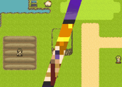
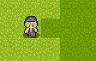

|
|||
（2022/11/22(3.00)～2024/02/21） Ver3.00～3.282 大規模アップデート! 演出もデバッグも速度も全強化!! プロ版も販売開始しましたが、こちらは上級者の方向けです。 最初は注意書きが多いです。 【すぐ新機能を見たい人はここをクリック！】 その他を見たい人は → 【ゲーム改善・仕様変更】 【エディタ改善・仕様変更】 【プロ版の新機能】 【Ver3.02～3.282の追加の修正(位置エラーを出さない裏技も追加！)】 → Gameの追加修正 Editorの追加修正 基本システムの追加修正 【とても重要なＱ＆Ａ】 Q. コンバートしたけどVer2までと全然違う挙動をします！ マップチップが変！ 「位置」指定の画面外エラーが出る！ 文字が斜めになってる！ など！ A. まずはEditor.exeから「ゲーム基本設定」の「Game.exe 動作バージョン調整」を 「旧Ver2.29時点の挙動で動作」に切り替えてゲームを実行してみてください。 それらの点に関しては、その変更をすることでおおよそ前の通りに動作します。
【新機能】 一目では把握できない量の新機能が増えました！ 使えるものから慣れていってください。 ↑トップへ ●【文字コード】ウディタ全体の文字コードが「SJIS」から「UTF-8(Unicode)」になりました。 以下の点で変化があります。 - Ver2以前のデータを読み込んだ際、最初に「コンバート画面」が表示されます。 ここで基本データ、マップファイル、txt、csvファイルをUTF-8に変換する作業が実行されます。 （txt拡張子以外のテキストファイルは自力でUTF-8に変換してください） - 全てのファイルの文字コードが「UTF-8」になります。 今後はゲームから読み込むテキストファイルもなるべく「UTF-8」にしてください。 - 「【文字列操作】で出力されるファイル」「【DB操作】で入出力されるCSVデータ」、 「【ダウンロード】機能の通信内容」の標準文字コードが「UTF-8」になります。 - 海外OS上でもゲームが正常に動作しやすくなります。 暗号化データ内にある日本語のファイルも、多くの海外OSでそのまま読み込めそうです。 - 文字列として「♥（ハート）」マークなどの記号も入力可能になります。 ただし、その記号がフォントに含まれていなければ文字化けしますのでご注意ください。 ●【デバッグ文】デバッグ文に「変数監視」機能を搭載しました。変数の追跡が可能になりますす。 たとえばデバッグ文に ValWatch:ON=2000009 と入れると、指定した変数が変化したとき「デバッグウィンドウ」に以下のように表示されます。 【表示見本】 # ValWatch=> 2000009 = 4 ※通常変数9に4が格納された -->[MapEv14/4行] ※またこの機能を使うと「コモンイベントの高速化」がオフになるので、 コモンイベントの処理時間が平均で「元の6～10倍以上」になる場合がございます。 高負荷の状況をテストするのにも使えますので 他機種への移植をご検討の方は これを利用してEv処理時間をなるべく小さくするよう心がけてみてください。 ※【注意！ ValWatchで数値計算が狂う場合があります！】 ValWatchを使用中は、高速化が解除される影響で、コモンイベント内の変数操作などで 数値が「2147483647」を超えると「-2147483648」に逆転してしまう現象がなくなり、 常に数値が±20億以内におさめられるようになります。 ±20億近くの値を使う計算を行っている場合や、 あるいは計算ミスなどで知らない間に21億を超えたことによる 数値の逆転が発生していた場合、ValWatch機能のON/OFFで 計算結果に差が発生してしまう場合がございますのでご注意ください。 ●【デバッグ文】デバッグ文に「ピクチャ監視」機能を搭載しました。 たとえば「デバッグ文」機能で PictureWatch:ON=123 と入れると、以後ピクチャ123番を監視し続け、そのピクチャに処理が行われるたびに、 「デバッグウィンドウ」にそのピクチャ番号と処理位置、 処理内容（表示(New） 移動（Move) 消去（Delete） ディレイリセット（Delay Reset) ピクチャエフェクト（Effect））が表示されます。 使いこなせば、ピクチャの問題を探すのが効率的になるでしょう。 【表示見本】 # PictureWatch=> 123 <New> (※新規表示） -->[ｺﾓﾝ696/28行] ●【変数操作+】取得できる項目を追加しました。
●【文字列操作】「↓のファイルをBase64で読込」コマンドを追加。 画像やセーブデータなどのバイナリファイルを、Base64フォーマットの文字列として読み込むことができます。 主にサーバとの通信時に使用することになるでしょう。 ●【文字列操作】「特殊文字を全て削除」を追加 フォント変更の\f[]などの特殊文字によって生まれた内部コードを全て削除します。 ルビ\r[XX,YY]や\img[]指定も「 ] 」が終わる範囲まで消去されますが、 ルビ\r[XX,YY]に関しては「XX」の部分だけ残ります。 ●【文字列操作】「に↓から最後1文字切り出し」コマンドを追加しました。 指定した文字列の「最後」から1文字だけ切り出せます。 後述する長さ取得の裏技<<GET_STRING_WIDTH_COUNT>>と合わせて使うと、 文字列の長さを調節しやすそうです。 ●【文字列操作】「↓のファイル読込」を選んだ場合だけ使える裏技コマンドを追加しました 「手動入力」で以下の文章を入れることで特殊な情報を得ることができます。
●【文字列操作】「↓のファイル読込」処理時、読込ファイルの「文字コード」の指定ができるようになります。 「UTF-8読込[標準]」「SJIS読込」「自動文字コード判別」から選ぶことができます。 よく分からない場合は「自動」でほぼ問題ありませんが、処理が少しだけ重くなります。 ●【DB操作】可変DBへの「新規挿入」「抜き出し」処理を追加。 空データをデータ間に挿入したり、データを抜き取って間を詰めることが簡単になります。 ●【ピクチャ】 「文字列ピクチャ」が回転できるようになりました。 ただ従来作品で文字列ピクチャに内部的に角度が指定されていて Ver3で大変なことになるケースもあると思いますので、 文字列を回転させたくない場合は「ゲーム設定」の「Game.exe 動作バージョン調整」を 「旧Ver2.29時点の挙動で動作」に切り替えてください。 ●【エフェクト】エフェクト機能を多数追加しました。
●【エフェクト】 マスク機能を追加しました。簡単に言うと描画範囲を一部封印できる機能です。 白黒の画像を使って「マスク」に書き込み、キャラ・マップ・ピクチャのマスクをONにすると、 指定したキャラ・マップ・ピクチャのみ、表示される範囲を制限することができます。 使えるマスクは1レイヤーだけですが、暗闇の表現、マップ上のキャラが一定範囲内にしか 表示されない表現、ミニマップ表示、カットイン作成などが実現できます。
 ↑全面表示のピクチャを「マスク」で画面の左右1/3だけ非表示にして斜めカットイン風に見せている例
●【ピクチャ】 ピクチャへの画面取得機能 <SCREENSHOT> を実装。 「[1]ファイル読み込み」のファイル名、または「[2]文字列読み込み時」の文字列変数内に <SCREENSHOT>と入れると、「その時点で表示されている画面」をピクチャとして 利用できるようになります。 なお、このピクチャ内容はセーブできず、ロード時には消えてしまいます。 また、この<SCREENSHOT>ピクチャ指定で「表示」をするたび、 「すでに<SCREENSHOT>を表示中の他の全ピクチャの画像」も更新されます。 つまり、ゲーム内では<SCREENSHOT>は内部で共通の画像であり、 【最新の1枚分しか表示できません】。この点はあらかじめご了承ください。 ●【ピクチャ】 部分切り出し表示機能<CUT/～>を実装。 [1]ファイル読み込みまたは[2]文字列読み込み時に 「<CUT/X10-150/Y40-300>Picture/AAA.jpg」と指定すると、 画像「AAA.jpg」から、X座標10～150ピクセル、Y座標40～300ピクセルの範囲だけ 切り出して表示することができます。 ●【ピクチャ】表示基準位置として「中央上」と「中央下」を新たに実装。 ●【チップ処理】 「単体チップ設定を変更」に「後ろだと隠れる」属性を追加。 従来バージョンではなぜかこれだけありませんでした。 ●【ダウンロード】 POST送信機能を実装しました。 ※POST送信：URL内にデータを書き込むGET方式と違うやり方でデータをやり取りする。改ざんされにくく、読まれにくい。 ●【ダウンロード】 URLとPOST内容に「SJIS変換する」「SJIS文字列を受信」「URLエンコードして送信」オプションを追加。 ・「SJIS変換する」をチェックすると、文字列情報の文字コードをSJISに変換して送信します。 これはVer2時点の処理で使われる文字コードで、従来に合わせる場合は 「SJIS変換する」をチェックしてください。チェックしない場合は「UTF-8」文字列で送信します。 ・「SJIS文字列を受信」をチェックすると、受け取ったデータをSJIS文字列として認識し、 ウディタ内で使える文字列に変換します。 そうでなければ受信されたのは「UTF-8」文字列として扱われます。 ・「URLエンコードして送信」は、URLの「クエリー部分（URLの?以降の部分）」だけをエンコードします。 またこのURLエンコードは、アルファベット、数字、記号の「*」「.」「-」「_」「&」「=」のみ変換しません （クエリーやPOST内容全体をURLエンコードする場合、「&」や「=」が違う文字になっていると フォームデータ受信の方法が使えなくなるため。基本的に問題はないと思います）。 ●【特殊文字】\iS[?]、\imgS[？]を実装。 ゲーム基本設定でピクチャの拡大縮小時が「なめらか」になっていても、 この特殊文字で指定されたアイコンや画像に限り常に「ガタガタ＆くっきり」になります。 ●【特殊文字】 フォントのふちの色や影カラーを設定できる \cE[?]、\cS[?]を実装 \cE[?] \Eによるフォントのふちの色を?番のフォントカラーに変更します。設定しなければ黒です。 \cS[?] フォント影 の色を?番のフォントカラーに変更します。設定しなければ黒です。 ●【特殊文字】 文字のふちの太さを設定できる \wE[?] を実装 これまでエッジを付ける特殊文字「\E」がありましたが、「\wE[?]」と入力することでふちの太さを?ピクセルに設定できるようになりました。 設定できるふちの太さは1～5です。従来の「\E」は「\wE[1]」と同じです。 ●【特殊文字】 文章中の画像サイズを％補正できる特殊文字、\isize[??]を実装。 たとえば文中に\isize[50]と入れると、その後の\i[?]や\img[～]で表示される画像のサイズを50％の大きさで表示します。 ●【特殊文字】 位置、フォントサイズ系の特殊文字、\bx[??]、\f+[?] を追加。 ・\bx[??] ： 次行からの開始X座標を設定する。\bx[30]と入れると次の行から30px右にずれた状態から文字表示される。 ・\f+[?] ： フォントサイズを「加算」。直前のフォントサイズに足したり引いたりできます。 ●【システム変数】「Sys26～27：選択肢ウィンドウX/Y余白」のシステム変数を追加。 選択肢ウィンドウの縦横の余白を設定できます。 ●【システム変数】「Sys119：基本画面倍率[1-3]」を追加。 320×240の2倍表示なら「2」、それ以外なら1が返ります。 （プロ版で1～3倍まで任意に変更できるようになったので、その判別用として追加されました） ●【システム変数】 「Sys122：Map&Evｽﾞｰﾑ時なめらか=1」のシステム変数を追加。 1を代入すると、「3Dモード」でプレイしている場合に限り、 マップやイベントをズーム（拡大縮小）したときにガタガタではなくなめらかな表示になります。 （これまではゲーム設定がどうであれ、必ず「ガタガタ」モードで描画されていました） ●【システム変数】「Sys123：次表示ﾋﾟｸﾁｬ拡縮くっきり(1=YES)」を実装。 これが「1」の状態でピクチャの「表示」を指示したピクチャに限り、 ゲーム基本設定でピクチャを「なめらか・ぼんやり」表示にしていても「ガタガタ・くっきり」で表示されます。 ドット絵のピクチャをきれいに拡大したいときに。 ●【システム変数】「Sys125：フォント太さ(1～10)」を実装。 全フォントの「太さ」を変更します。基本値は5です。 3くらい変えないと変化が見えない場合があります。 ●【システム変数】 Sys127：マップタイル非セーブフラグ（1=YES） を実装。 これを1にしているとセーブファイルに現在マップのタイル情報を保存しなくなります。 500x500のマップだとセーブする際、マップ領域の保存だけで3MB分も使ってしまうので、 その情報を保存したくない人向けです。 これをオンにしてセーブした際、ロード時にはマップタイルが「マップファイルから」再読込されます。 （つまり、ゲーム内で書き替えたマップタイルも元に戻ります） ●【システム変数】 Sys129:Ev斜め移動 X速度補正[%]、Sys130:Ev斜め移動 Y速度補正[%]、追加 主人公と全てのイベントが「斜め」に移動する際、X方向とY方向の速度に補正をかけられます。 （エフェクトの「ピクセル移動」には影響しません） 斜め移動時、上に1、横に2マスの速度で移動させたりできます。 クォータービューのマップを実装する際などに有用だと思います。 基本的には、キャラの座標直接指定「9100000+Y*10」の変数で移動先を直接指定するときに効果を発揮します。 （以下はSys129:斜めX速度補正を「100％」、Sys130:斜めY速度補正を「50％」にし、 9190000(このEvのX座標）に+2と-2を、9190001(このEvのY座標）に+1と-1を 定期的に加算して移動させた例）  ●【システム変数】 Sys131:主人公 中心X補正、Sys132:主人公 中心Y補正を追加。 主人公の中心表示座標を補正します。これを変更した後は エフェクト処理でスクロール「主人公に戻す」をかけてください。 ●【システム変数】Sys137:ウィンドウ拡大率[%] を追加。 ゲーム画面のウィンドウ拡大率を取得ないし代入できます。 ●【システム変数】Sys138:画面ﾓｰﾄﾞ[ｳｨﾝﾄﾞｳ:0/仮想全:1/全:2]を追加 ゲーム画面の画面モードを切り替えできます。 「仮想全:1」はボーダーレスのフルスクリーン化、「全:2」は解像度切り替えの全画面化です。 ●【システム変数】Sys143：[読]処理可能ｺﾏﾝﾄﾞ[通常0/プロ版1]を追加 プロ版のコマンドが使用可能な状態なら1を返します。 ●【システム文字列】「SysS52：[読]起動時データフォルダ」を正式追加。 起動時のフォルダ名が格納されます。通常は「Data/」が入っていますが、 -fオプションでGame.exeを起動させた場合のみ変化します。 （いつの間にか入ってた同機能の-bオプションはこの-fに変更されました） ●【システム文字列】「SysS54：最終緑帯メッセージ文」 を追加。 最後に表示した緑帯のエラーメッセージが格納されます。 ●【変数呼び出し値】「9100000+10*Y+X」のキャラ情報呼び出し値に、 X=7：ピクセル補正X 8:ピクセル補正Y を追加 ●【コモンイベント入力内容】 コモンイベントの変数と文字列の「入力」が各4個から各5個に増えました。 ●【ピクチャ表示一覧】 テストプレイ中、「Shift」か「中クリック」を押しながら「F7」キーを押すことで 「いまマウスカーソルが重なっているピクチャ」だけを「ピクチャ表示一覧」に表示できるよう修正。 たくさんのピクチャがあっても、指示した位置だけの情報を得やすくなります。 ●【タイルセット設定】 オートタイルの数が15個→31個に増加しました ●【タイトルバー】 テストプレイ時のタイトルバーに、イベント処理回数を「?k」で表示するようにしました。 「k」は1000の意味で、「2.2k」なら約2200回のイベント処理が行われたことになります。 負荷チェックのおおまかな目安としてお使いください。 ●【起動オプション】 Game.exeとEditor.exeに「-f <読み込みフォルダ>」のオプションを追加。 Game.exeやEditor.exeの起動時、コマンドプロンプトやバッチ(.bat)ファイルなどを使って 「Editor.exe -f Data2」などと入れて起動させると、通常の「Data」でなく「Data2」フォルダのデータを編集対象にして起動できます。 Game.exeでも同様で、対象としたフォルダ名のゲームデータを読み込んでプレイ可能です。 ※ただしセーブフォルダ名は同じままなので、複数のゲームのセーブデータが1つのSaveフォルダ内に混ざってしまう危険性がございます、あらかじめご注意ください。 ●【Editor.ini】 エディタ内の「システム変数名」、および「一部の変数呼び出し文」の言語を、Editor.iniの「SystemValue_Language=X」で切り替え可能にしました。 Xを0にすると日本語、1にすると英語になります。 （ここで切り替えできるテキストは「リソース」でなく「プログラム内に直接書かれた文章」であり、リソースから翻訳するのが難しかったため、ini側で切り替え可能にしました。英語テキストは Velella Himmel様とJeffrey Casey様によるVer2.24Zのものを一部使わせていただきました） ●【Game.ini】 INIファイル内にクリップボード関連の隠しオプションを追加しました。 ClipBoard_Use=1： プレイヤー側の都合で最初からクリップボード機能を使いたくない場合は0にしてください。通常は1になっています。 MainText_to_ClipBoard=0 ： 1にすると「文章の表示」の文章を自動でクリップボードにコピーします。 翻訳しながら遊ぶときに使ったり、「棒読みちゃん」など外部ツールのクリップボード機能で読み上げさせたりできます。 ●【エディターオプション】エディタのカラーテーマを選択できるようになりました。 一般公開版では「ウディタホワイト」と「クラシックグレー」が選べます。 プロ版専用機能として「ネイビーブルー」、「パーフェクトダーク」が選択可能です。 （ただし技術的な都合で、チェックボックスやボタン、グループボックス欄は色変更されません）
|


【ゲーム部の改善・仕様変更】 ↑トップへ ●【イベント処理速度】 アルゴリズム改善とプログラム環境の更新により、 コモンイベント内のイベントコマンド処理が大幅に高速化されました。 組み方にもよりますが、一般的な処理ならば従来の平均2～4倍以上の速度で イベント処理が行えるようになるようです。 【高速化実例】 コモンイベント内で3万回ループに「Cself0 = 0」を10個入れた処理を毎フレーム回したときのイベント処理時間が、 ウディタ開発者の環境で Ver2.294 約36ms → Ver3.00 約1.5ms （24倍速）にまで削減できました。 「(オプションにチェックの入っていない)変数操作」や「ループ」関連の処理が大幅に高速化されているので、 シミュレータ系のゲームも動かしやすくなると思います。 ●【描画速度】 描画速度が平均2倍近くになりました。 描画時間が従来のおおよそ半分程度になると思われます。 ●【ゲーム起動】ゲームの起動を高速化しました。 ウディタ作者の環境にて、Data.wolf暗号化したサンプルゲームの初期起動時間が、 従来 2.6秒 → 最新版 1.5秒 くらいに早くなりました。 ●【リセット処理】 リセットを高速化しました。 リセット時に余計なデータを再読み込みしないようにしてリセット速度を高速化しました。 Data.wolf化したサンプルゲームで旧版1.5秒のところが最新版で0.55秒くらいになりました。 テストプレイ時に特に快適になると思います。 ●【変数操作+】 「ピクチャ番号X」の「マウスカーソル重なってる？(1=YES)」機能において、 角度の付いたピクチャでも重なり判定をほぼ正確に取れるよう修正。 ●【文字列操作】 キーボード入力用のデフォルトフォントを「Meiryo」に変更しました。 海外のWindowsだと「MSゴシック」が入っていない可能性が高かったためです。 ただし言語によってはMeiryoもたまに入ってないようです。 ●【ピクチャ】通常ピクチャの「角度」を0以外にした場合でも縦横の拡大率が異なる状態を維持できるように修正。 （文字列ピクチャは、今回の修正ですでに縦横の長さが異なる場合の角度変更が可能です） ●【ピクチャ】 画面外の「通常ピクチャ（角度0のみ）」の処理を従来よりも早く打ち切る処理を追加。 地面にピクチャを貼り付けたり、キャラにかぶせてピクチャを表示している場合の負荷軽減が期待できます。 ●【イベント制御】 「イベントの一時消去」「トランジションの指定」時の「フレーム」値として 変数(100万以上の値)が入力できるよう修正。 従来は999999以下の固定値しか入れられないようになっていました。 ●【ピクチャ一覧表示】テストプレイ時にF7で出せる「ピクチャ一覧」機能の使いやすさを向上しました。 - マウスホイールまたは上下キーで前後にページ送りできる機能を追加。 - キャンセル、Ctrl、右クリックですぐ抜けられる機能追加。 またこれらのキーで画面を抜けた場合、最後に表示されていたページを記憶する機能を追加。 ●【座標取得】イベントコマンドで得られる「主人公」の「画面座標」が正確になるよう修正しました。 たとえば【変数操作+】による「主人公」の「画面X・Y座標」などです。 おそらくスクロール値も正確になっていると思われます。 → 従来は「1フレーム前の座標値」が取得されていたため、主人公のキャラチップに ピクチャを重ねようとしてもどうやっても1フレーム分ズレる現象がありました。 これは従来、「イベント処理後に主人公のキー入力 + 位置情報が更新されていたため」で、 最新版では「キー入力」と「位置情報更新」を分離して「イベント前に位置情報だけ更新」する形にしました。 → 代わりに、キー入力による「主人公」の移動が「動き始めの1フレームだけ遅れる」ことになるので、 1フレームしか猶予のない逃走ゲームなどはVer3.00への更新によってクリア不能になる場合がございます。 過去の挙動に戻したい場合は、「ゲーム基本設定」の「Game.exe 動作バージョン調整」で 「Ver2.29時点の挙動で動作」に切り替えてください。 ●【エフェクト】 キャラ・ピクチャのシェイク回数、あるいはマップエフェクトのフレームとして 「100000（10万）」以上を指定すると「無限回」になるよう修正 ●【エフェクト】マップのズーム時、拡大率に0以下の値を指定しても1になるように修正。 マップなどが正常に描画されなくなる問題への対応です。 → 従来はマップズームでマイナスの値を入れてマップ反転する描写ができましたが、 Ver3からできなくなってしまうので、必要な方はver2.29以前をご利用ください。 （将来的に、同様の演出ができるような機能の追加を検討しています） ●【イベント制御】 「キャラ動作指定」で、入力された「変数」は 動作指定開始時点の値が使用されるようになります。 これに伴い、コモンセルフ変数なども使用可能になります。 挙動がおかしくなる場合は「旧Ver2.29以前の動作」に変更してください。 ●【システム変数】 「Sys30:[読]プレイ時間(ﾐﾘ秒単位)」がフレーム途中でも 最新のミリ秒を得られるよう修正。 （従来はフレームが経過しないと更新されませんでした） また、同フレーム中なら「1000」以上の値になるよう修正しました。 つまり同フレーム中の引き算がしやすくなります。 ●【エラー】 緑帯エラーの表示中にF12リセット、あるいはF11更新できるように修正。 （ただし緑帯中のF11はクラッシュしやすいです！） ●【DB操作】「DB操作：データ番号がマイナスです」のエラーのとき、そのマイナスになっている番号を表示するよう修正 ●【起動処理】-vinput、-sinput機能を削除。 ●【起動処理】暗号化のバージョンが異なる「.wolf」ファイルが混ざっていたり、 Game.exeに対応してない暗号化データがあった場合は、 起動時にその旨を知らせるエラーを表示するよう修正。 （これまでは「BasicData/Game.datがない」としか表示されませんでした） ●【F11キー】F11キーによる全画面化を「画面解像度切り替え全画面化」から「ボーダーレス全画面化」に変更 ●【Editor全体】Editor.iniがない場合に起動するとウィンドウ座標が0基準になっていたのを、 サンプルデータのフルパッケージ時のようなウィンドウ座標初期値を使用するよう修正。 ●【ファイル入出力】 各種ファイル読み書きにおいて、ゲームデータフォルダの外に保存しようとしたときにエラーが出るよう修正。 ●【DB操作】 CSV保存で存在しないフォルダを指定した場合、自動でフォルダが生成されるよう修正(Ver3.081修正) 【エディタの改善・仕様変更】 ↑トップへ ●【エディタ全体】プログラム作成環境をVisual Studio2003から2022に変えた影響で エディタ全体のデザインがフラットになりました。 また、各ウィンドウのサイズやパーツが10数％程度ですが大きくなっているようです。 ●【起動画面】起動時のスプラッシュウィンドウに進行状況の％が表示されるようになりました。 ●【コモンイベントウィンドウ】 コモンイベント編集時、Ctrl+Rの「直前のイベントに戻る」で 前のイベントに戻ったとき、「行数」も最後の位置に戻るように修正 ●【コモンイベントウィンドウ】 コモンイベント名の欄の横幅を少し伸ばしました。 ●【条件（変数）】 従来、最大3択までだったのが「4択」まで分岐可能になりました。 ●【文字列操作】 文字コードがUTF-8化した影響で全角1文字が最大4バイト以上になる可能性が発生したため、 キーボード文字入力数の最小値が「4」になりました。 （Ver2.29以前ではバイト数オーバーによるフリーズを避けるため、最小値が2バイトでした） ●【マップイベントウィンドウ】「通常変数」が増えるとイベント切り替えに時間がかかっていたのを高速化。 ●【マップ編集画面】マップでイベントを複数1箇所に重ねた場所をクリックして アクセスできるイベントを「一番IDが大きいもの」に修正。 従来は最もIDが小さい方にアクセスしてしまったため、目に見えている 最も大きいIDのイベントをずらせなかったり編集できなかったりして直感的ではありませんでした。 ●【タイルセット設定画面】 タイル画像上でマウスホイールを回転、ないしホイール押しながらドラッグで スクロールできるように修正。 ●【タイルセット設定画面】タイル設定時のレスポンスを高速化しました ●【タイルセット設定画面】 オートタイルの数が15個→31個に増加したためオートタイル行数が2列増加。 ●【タイルセット設定画面】 1マスの見え方を32pxと48pxで切り替えできるオプションを追加 ●【タイルセット設定画面】 「1画像分CSV出力/読込」機能を追加。 画像単位で「通行許可設定」「通行方向設定」「カウンター属性設定」「タグ番号設定」を読み書きできます。 画像を読み込むとき、「同名のCSVファイル」があると自動で上記4設定を読み込むか質問が表示されます。 （つまりタイル画像配布時、CSVとセットで配布すれば通行設定の手間がいりません。 ●【タイルセット設定画面】上記のCSV通行設定をタイルにドラッグできる機能を追加。 好きな場所に一定列分の通行設定だけ読み込ませることができます。 ●【コマンド表示】 コマンド入力ウィンドウの、以下のコマンドへの「コマンド切り替え時」、 ないし「イベントコマンドの修正」時のレスポンスを高速化しました。 - 変数操作 - DB操作 - 文字列操作 - 条件(変数) - 条件(文字列) - コモンイベント ●【データベースウィンドウ】 - データの切り替え時のレスポンスを高速化しました。 - タイプの切り替え時に「データベース参照」のデータを表示する際、最低限の数だけ読み込むようにして切り替え負荷を軽減しました。 従来は、読み込み先DBのデータ数が1000個以上あるデータベースを読み込むときなどに、だいぶ時間がかかってしまっていました。 ●【データベースウィンドウ】 タイプ名、データ名の欄を少し横に伸ばし、右下キャプション欄の行数を増加、メモ欄の縦スクロールバーを消去しました。 ●【データベースウィンドウ】「Ctrl+R:直前のタイプに戻る」のショートカットでページ数も戻るよう修正。 また、新たに「Ctrl+Shift+R:直前のデータに戻る」のショートカットを追加しました。 ●【コモンイベント(コマンド)】 コモンイベント数や変数が多くなると「コモンイベント」コマンドの「修正」をしたとき ウィンドウが開くまで数秒単位で時間がかかることがあったのを修正。 ●【マップ編集画面】「半歩左に設置」「半歩上に設置」をしたキャラがずれて表示されるように修正。 ●【マップ編集画面】マップの書き換えを1手戻せるショートカット「Ctrl+Z」を追加。 ●【マップ編集画面】マップの「1手戻す」機能が高速になりました。 ●【マップ編集画面】1000マス以上の超巨大なマップでも正常に描画されるように内部処理を抜本修正しました。 （従来は描画できず真っ白になっていました） さらに、マップがどれだけ広くてもエディタの描画負荷が一定以下になります。 ただし、ウィンドウを広げたりズームアウトしたりして一度に映るマップ範囲を広くすると重くなります。 ●【マップチップ選択ウィンドウ】従来、16と32サイズ以外のチップがジャギジャギになっていたのを、なめらかに描画されるように修正。 また、PNGファイルの保存の仕方によってチップ選択欄の見た目が白抜きになる現象が起きにくくなるよう修正。 ●【マップチップ選択ウィンドウ】 ホイールを押しながら上下ドラッグでスクロールできる機能を追加。 ●【場所移動】 「移動先を見ながら指定」を開いた直後、あるいは「拡大率を変更」したタイミングで、 「選択されている座標」が中央に表示されるようになりました。 ●【場所移動】 「移動先を見ながら指定」において、非常に大きいサイズのマップでも マップが正常に描画されるよう修正しました。 ●【イベント制御】「トランジションの指定」の「瞬間表示」を「単純切替」に名前変更。 ●【マップイベントウィンドウ】 検索ウィンドウを追加。 また、ショートカット「Ctrl+F」で検索ウィンドウを表示できるようになりました。 （コモンイベントウィンドウにあったものと同様のものです） ●【マップイベントウィンドウ】 「行数」欄を追加。選択中の行数が分かるほか、 ここに行数を入力してEnterを押すとその行までジャンプできます。 （コモンイベントウィンドウにあったものと同様のものです） ●【マップ保存】マップのタイルが「3レイヤーとも完全に空白」ならマップファイルにタイル情報を保存しないよう修正。 ランダム生成用などで巨大な「空白の」マップファイルを作る際、マップ容量を圧迫せず、読み込みも早くなります。 ●【マップ/コモンイベントウィンドウ】 検索ウィンドウの履歴文字列を10個まで保存するように。 ●【マップ/コモンイベントウィンドウ】 イベントウィンドウを閉じたとき、検索ウィンドウも同時に閉じるよう修正。 ●【コモンイベントウィンドウ】 「一つ元に戻す」をしたとき、内容を戻した行にジャンプするよう修正。 ●【マップ・コモンイベントのイベント一覧、イベントコマンド一覧】 従来は中クリックを押すとブラウザのように上下スクロール操作ができたのが、 プログラム環境を新しくしてからできなくなってしまいました。 元のようにする方法が分からないので、新たにクリックドラッグのスクロールを実装しようと検討中ですが 思ったより苦戦しており、今回の修正では搭載できませんでした。 今後も挑戦してきたいと考えています。 ●【ゲームデータ作成】 最後に使用した暗号化の種類（なし/Data.wolfのみ/フォルダ別）と選択されたフォルダを記憶し、 次回からそれを初期値にするよう修正。 ●【ゲームデータ作成】ゲームデータ作成・暗号化処理が従来よりも安定して行えるようになりました。 ●【ファイル】従来必要だったEditorGraphic.datが不要になりました。 ●【マップ保存】マップに変更を加えた後、ゲーム設定画面やエディターオプションなど 再起動しうる画面に入ろうとする前に変更されたマップを保存するか聞くように変更しました。 （再起動時におかしなことになるため） ●【終了時確認】エディタを閉じるときのマップ保存確認の質問が、エディタを閉じる「前」に表示されるよう修正。 （従来は技術的な都合で、画面が全て閉じてからマップ保存確認が表示されるようになっていました） ●【タイルセット設定画面】「最後に選んでいたタイルセット番号」が最初に出るよう修正(Ver3.071修正) ●【マップ編集】マップ編集画面の全体化状態・画面倍率状態が記憶されるように(Ver3.08修正) ●【マップ編集】マップ選択ウィンドウの初期位置・サイズが記憶されるように(Ver3.08修正) ●【データベース画面】DBウィンドウでCtrl押しながらタイプ切り替えでデータ維持できるように(Ver3.09修正) ●【翻訳リソースデータ】Editor.exeの機能として、システム変数、システム文字列名を書き替えられる Editor.Lang.SystemValue.txt、Editor.Lang.SystemString.txtを 翻訳用リソースデータに追加（Ver3.145修正） ●【起動時】コモンイベントファイルやシステムデータベースのファイルが破損している場合、 （クラッシュせず認識できれば）起動時にそのことを伝える機能を追加（Ver3.210修正）。 ●【ゲームデータの作成】動作バージョンを固定化するオプションを追加 （Ver3.260修正） → チェックを入れて動作バージョンを固定すると、将来的に Game.exeを新しいものに差し替えても正常に動作しやすくなります。 【ゲーム部 バグ修正】 ↑トップへ ●【変数操作＋】 マップイベントの起動条件の変数を満たしていない場合に、 「変数操作+」でそのキャラの「起動条件」を読み込むと 常に「0（決定キーで実行）」が返されてしまっていたのを、-1が返るよう修正。 （「ゲーム基本設定」の「動作バージョン調整」を「Ver2.29以前の挙動」にすると0が返るように戻せます） ●【DB操作】データ数が0個だと、「データ数を取得」しようとしてもDBがない扱いになるバグを修正 ●【DB操作】「50バイト超の『データ名』で名前呼び出し」をするとエラーが発生するバグを修正 ●【変数操作+】「その他」の 「言語[1:日/2:英/3:西欧/4:中国(簡)/5:中国(繁)/6:ﾊﾝｸﾞﾙ]」取得機能が機能していなかったバグを修正 ●【ピクチャ】「表示」を予約した状態のピクチャがある状態でセーブしてからロードすると ファイル名が指定されてないピクチャが存在したままになる場合があるバグを修正 ●【ピクチャ】 カラーが100より大きいピクチャを「消去」すると明るくなりながら消えていく不具合を修正 （今後は「消去」をした場合、「移動」で不透明度を0にしていく場合と同じように消去されます） ●【エフェクト】「自動パターン切替」で元ピクチャのパターン数をオーバーしたときクラッシュすることがあるバグを修正 ●【キー入力】「キー入力の禁止」で「パッド全部」を停止させても左スティックで移動できてしまうバグを修正 ●【キー入力】「キーボード全キー」の「キーが押されるまで待つ」にしたとき、あるキーコードの番号が押されている状態でそれより大きいキーコードのキーを押してもキーが受理されない現象を修正 ●【イベント制御】「トランジションの指定→トランジション実行」の最中にトランジションの指定を変えると トランジション途中でもトランジションが新しい方に変わってしまうバグを修正 ●【フレームレート】最大フレームレートがおよそ60fpsになるようウェイトを調整 （一時的に61～62フレームまで出ることがありますがほぼ60安定になりました。 従来は120Hzのディスプレイにおいて安定状態で63～64fpsまで出てしまいました） ●【特殊文字】ルビの特殊文字\r[XX,YY]が一瞬で表示されていたのを、他の文字と同じように「メイン文字を表示して、それが全て表示された後にルビが表示される」よう修正 （「ゲーム基本設定」の「動作バージョン調整」を「Ver2.29以前の挙動」にすると瞬間表示に戻せます） ●【画像読込】ある画像ファイルと、同じ名前で末尾に「_a」が付いたファイルが同時に存在するとエラーが出ることがあった現象を解消。 ●【マップ】「基本マップチップ」が設定されていないと「オートタイル」も表示されなかったのを修正。 ただ、もともとクラッシュ対策でその仕様になっていたようなので、 またクラッシュするようなら元の仕様に戻す予定です。 ●【マップイベント】 キャラクターのアニメが5パターンの時、特定の条件で マップ移動後の初期アニメパターンが3(中心)でなく2になってしまうバグを修正。 ●【マップイベント】 特定条件で上からプレイヤーに接触してきた 「イベント接触」条件のマップイベントが起動しないバグを修正。 ●【コモンイベント】 テストプレイ中、コモンイベントに「並列実行（常時）」を新たに追加して F11で読み込み直ししても、増やした並列実行イベントが実行されないバグを修正 ●【デバッグウィンドウ】 デバッグウィンドウに特殊文字を表示すると文字化けする現象を修正。 ●【変数呼び出し値】 キャラ画像が「4方向」のときに変数呼び出し値「9100006+10*Y」に 「7(左上)」「9(右上)」を代入すると「下」を向いてしまうバグ修正 ●【F4画面切り替え】 メインディスプレイより縦に長いサブディスプレイ側で初期表示した後に F4を押すと、メインディスプレイ側にタスクバーが埋まるくらい上に出てしまう 現象を修正（座標はやや変になりますがタスクバーは触れる状態になります） 【ゲーム部 既知のバグ】 ↑トップへ ●【トランジション】過去のバージョンで作られたセーブデータを継続して使用したとき、 何らかの条件でトランジションに微妙な差異が見られる場合があるという現象が報告されています。 原因はつかめていませんが、Ver3以降のGame.exeで新たに始めたセーブデータでは 起きない可能性が高いようです。 【エディター部 バグ修正】 ↑トップへ ●【DB操作】そのDBに存在しないタイプ番号を指定し、データ名や項目に空欄の「名前」を指定して 「入力」しようとするとクラッシュするバグを修正 ●【コモンイベントウィンドウ】DB操作で特定の操作をすると「セルフ変数使用状況」にて 未使用のはずのセルフ変数が使用済みになってしまう現象を修正。 （ただ「使用状況」はコマンド内に入っているセルフ変数の値を検出するだけの処理なので、 これが防げない状況はどうしても発生します。こうなる頻度が高い部分だけもぐら叩き式で直していく予定です） ●【コモンイベントウィンドウ】非常に行数が多いコモンイベントを開いたときにクリックすると コモンイベントウィンドウ裏側をクリックすることがあるバグの修正を試みました ●【データベースウィンドウ】タイプ・データ切り替えなどで一時的に重くなったときにクリックすると データベースウィンドウ裏側をクリックすることがあるバグの修正を試みました ●【データベースウィンドウ】タイプを削除しても項目名だけ内部的に残ってしまっていたバグを修正 ●【マップ編集】 特定条件で、画面外をクリックしたときにクラッシュすることがあるバグを修正 ●【ファイル選択】 一部のファイル選択ボタンを押したとき、 「すでに文字列に指定されているファイルのフォルダ」を優先的に開くようになっていなかった箇所を修正。 - サウンド - マップ設定の各種ファイル指定 ●【マップ選択】 「マップ選択」ウィンドウのサイズを一度変更すると、 「ツリー構造セーブ」と「データ更新」のボタンが左下の見切れる位置に移動してしまうバグ修正。 ●【ゲームデータ作成】 ゲームタイトルが空欄の場合でもそのままゲームデータの作成を実行できてしまい、 元のデータが危険な状況になる不具合を修正。 ●【イベント制御】 コモンイベント時、「動作指定」でコモンセルフ変数を選んだものに「修正」を行うと 対象キャラ欄がおかしくなるバグ修正 ------------- 【動作バージョン調整】 上にも書きましたが、ゲーム基本設定の「Game.exe 動作バージョン調整」に新たに「Ver2.29」が追加されました 「旧Ver2.29時点の挙動で動作」にするとVer3.00と比べ、挙動が以下の仕様に戻ります。 ●【システム変数】Ver2.29挙動では「Sys26～27：選択肢ウィンドウX/Y余白」が無効になり-999のみ返されます。 また、選択肢ウィンドウの余白が「チップサイズに応じて自動で設定」されます。 Ver3.00以降ではSys26、27で手動で選択肢ウィンドウの余白を設定できます。 ●【ピクチャ】Ver2.29挙動では文字列の角度が反映されなくなります。Ver3.00以降では文字列の角度が反映されます。 ●【変数操作+】Ver2.29挙動ではイベントが存在していないときの「起動条件」が0を返します。Ver3.00以降では-1を返します。 ●【文章の表示・文字列ピクチャ】 Ver2.29挙動ではルビの特殊文字\r[XX,YY]の部分が文字速度にかかわらず一瞬で表示されてしまいます。 Ver3.00以降ではXX部分が文字速度に応じて1文字ずつ表示されます。 ●【プレイヤーの画面座標】 座標の更新がVer3.00以降より1フレーム早くなりますが、「イベントコマンドで取得したプレイヤー画面座標」が1フレーム分だけずれるようになります（つまり、ピクチャを重ねてもぴったりの位置に表示されません）。 Ver3.00以降ではイベントコマンドで取得した位置がプレイヤーぴったりの位置になります。 ●【チップ処理】Ver2.29挙動ではオートタイルが0-15番までと想定されてチップ番号が処理されます。 （全て「固定値」でチップ番号を指定している場合は自動で補正されるため、Ver3にしても問題ありません） ●【変数操作+】 Ver2.29挙動ではオートタイル15個と想定した場合のチップ番号を返すようになります。 ●【ピクチャ】Ver2.29挙動ではピクチャの「角度」を0以外にすると強制的に「縦横同じ拡大率」になります。 ●【文字列ピクチャ】Ver2.29挙動では文字列ピクチャの「角度」が反映されません。 ●【文字列操作】キーボード入力時の文字入力数が「入力された値の1.5倍」に調整されます。 UTF-8文字コードになった都合上、「全角1文字で3バイト分」になるケースがあるためです。 ●【イベント制御】Ver2.29挙動では「キャラ動作指定」において、指定された「変数」として 「その各動作を実行する瞬間」のものが使用されます。 （たとえば「ジャンプ」の右・下に「3」が入ったセルフ変数1を指定しても、 ジャンプ前にセルフ変数が「0」になっていれば移動量「0」のジャンプしか行いません） ----- 【基本システム修正】 基本システムをVer3.00に更新しました。 自由なゲーム画面サイズにも対応、システム設定画面のキャンセルキー時の質問を追加、 「主人公ピクセル移動切り替え」コモンイベントを新たに追加、その他、微調整しました。 ・見本として「主人公ピクセル移動切り替え」処理を追加 [コモン39] ・初期BGM・BGS・SE音量を50に設定、フォントの太さを設定 [コモン48/218行付近] ・メッセージ/選択肢ウィンドウの表示位置を微調整[コモン63/47・50行目] ・システム設定で「キャンセル」した時、変更を保存するか質問を表示するよう修正 [コモン95/749～800行 ・ コモン132/多数：「Ver3.00修正」で検索可] ・画面サイズの縦・横の小さい方を参照してフォントサイズを決定するよう修正 [コモン90/192-195行] ・画面サイズ指定によっては右寄せで文章を表示している部分がおかしくなるのを修正 （主に\ax[]を使っている部分をSys119:[読]基本画面倍率x[1-3] に合わせて調整するよう修正) [コモン64/547-562行][コモン88/225-239行][コモン90/258-274行・311-327行] [コモン93/252-268行・331-347行・621-635行][コモン102/174-190行・231-247行] ・キャラクター欄の顔サイズを画面の縦横の小さい方に合わせて表示するよう修正 [コモン90/192-195行] ・セーブ・ロード画面の名前の\A-(アンチエイリアスなし)を削除[コモン94/403行] ----- 【Ver3.00 「プロ版」の新機能】 ↑トップへ プロ版は有料版のWOLF RPGエディターです。 主な機能は通常版と同じで、バージョンが同じならファイルにも互換性がありますが、 セキュリティの都合で通常版では搭載していなかった機能、「ウディタっぽさ」を減らす機能、 その他プレミアムな機能が使用できます。 【WOLF RPGエディター3 PRO版 販売ページへ（BOOTH）】 なお毎年8月頃に行われるWOLF RPGエディター製ゲームのコンテスト「ウディコン」では、 公平性と安全性のため、「通常版のGame.exe」のみ使用可能となっており、 【プロ版のGamePro.exeは使えません】のであらかじめご了承ください。 （プロテクトがかかっていなければ、Game.exeを通常版のものに差し替えるだけでOKです。 その場合、プロ版専用の機能だけが使用できなくなります） ●【[P]ゲーム設定】 ゲーム画面サイズの「ピクセル単位の自由設定」機能が搭載。 通常版では横1280×縦960までの画面サイズですが、プロ版では最低「横100×縦100」から 最大「横1920×縦1440」まで1ピクセル単位で自由に画面サイズを設定できるほか、 1ピクセルを「2～3倍」にすることもできます。 （従来で言うと、「320×240」が「2倍」モードとして処理されています） 画面を正方形にしたり、スマートフォンのゲームらしく縦長にしたりすることが可能です。 ●【[P]エフェクト】 簡単に実行できる割に処理が非常に重い「マップ/画面全体」用のフィルタがプロ版限定で使用可能になります。 「マップ全体」あるいは「ピクチャも含めた画面全体」に適用できます。 「ソフトウェアモード」で実行した場合や、一部のビジネスノートパソコンなどでは、これらを使うと たった数コマンドで処理が10FPSまで下がってしまうくらい処理が重いので、理解のある方向けです。 【マップ】のエフェクト - [P]フィルタ(F)をﾘｾｯﾄ - [P]ﾏｯﾌﾟF/色彩明[重!] ※色相・彩度・明度です - [P]ﾏｯﾌﾟF/モノトーン[重!] - [P]ﾏｯﾌﾟF/ぼかし[超重!!] - [P]全体F/色彩明[重!] - [P]全体F/モノトーン[重!] - [P]全体F/ぼかし[超重!!] ●【[P]プロ版機能】 プロ版専用コマンドが解放されます。現在、以下の機能が実装されています。 - JPGスクリーンショット機能 ： 緑帯なしでJPGスクリーンショットが撮れます。セーブ画面などにも使えるでしょう。 - PNGスクリーンショット機能 ： 緑帯なしでPNGスクリーンショットが撮れます。 - フォルダ作成機能 - ファイルコピー機能 - ファイル削除機能 ： Dataフォルダ内は削除できません。主にセーブデータの削除用です。 - 処理停止ウェイト(ミリ秒) ： 画面更新含め、全処理を指定ミリ秒止められます（実際にウェイトが入るのはフレーム切り替わり時）。ヒットストップ演出やスロー演出、処理落ち再現などに。 ●【[P]ゲーム基本設定 プロ版】 追加のゲーム設定画面が搭載されます。 どれも「ウディタっぽさ」を減らせる機能となっています。 - タイトルバー設定 ゲームプレイ時や、起動待ち時にタイトルバーに表示される文字列を好きなように変更できます。 - 初期ローディング画像設定 起動時、ゲーム画面が出る前に「画像」と「ロード中ゲージ」を出すことができます。 起動後の真っ暗な時間が減らせます。ゲージは左側から表示されます。 - ファンクションキーのON/OFF設定 任意のファンクションキーと、PrintScreenなどのデフォルト機能をオフにできます。 オフにした後、スクリーンショット機能やリセット機能などを自力で搭載すればウディタらしさが減らせます。 ●【[P]ダウンロード】 プロ版のみ「ダウンロード機能」で以下の機能が解放されます。 - プロ版では「連続ダウンロード時に発生する自動ウェイト」がなくなります。 （1つのダウンロードが終わるまで他の通信ができないのは従来通りです） - 「指定URLをブラウザで開く」機能が使用できます。公式サイトや交流サイトへ誘導することができます。 - 「指定Zipファイルをダウンロードして解凍（解凍後、Zipは削除）」機能が解放されます。オンラインアップデートに向いています。 ●【[P]エディタ設定】エディタのテーマカラーとして、追加で「ネイビーブルー」「パーフェクトダーク」が選べるようになります。 ただし技術的な都合で、ボタンやチェックボックスなど色が変わらない箇所がありますのであらかじめご了承ください。
●【[P]プロテクト機能】エディタ側でプロテクト用キーを設定することができるようになります。 「ゲームデータの暗号化」処理がキーに応じて変化するようになり、また、正しいキーなしには基本データが開けなくなります。 プロテクト用キーを設定すると以下のようになります。 - ゲーム基本設定ファイル、各データベースファイル、コモンイベントファイル、タイル設定ファイル、 の基本データが編集段階でも暗号化され、正しいプロテクトキーを入力しなければ読み込みできなくなります。 （設定したプロテクト用キーはEditor.ini内に書き込まれ、エディタ起動時に自動で読み込まれます。 うっかりキーを忘れてEditor.iniを消すと自分でもデータが開けなくなってしまうので注意してください） - ゲームデータ作成時、プロテクト用キーによって暗号化のされ方が変わるようになります。 ●【[P]ゲームデータ作成】「プロテクト用キーを設定しているとき」だけ、ゲームデータ作成時に以下の設定が可能になります。 これらを設定することで、一見したときのファイル構造をウディタっぽく見せないことが可能です。 - 暗号化データの「拡張子」の変更 用意された中から「.wolf」以外の拡張子が選べます。「Data.assets」など他ゲームによくある拡張子に変えられます。 - 「キーファイル名」の設定 用意された中からキーファイル名を選べます（Data2.assetsなど）。 このキーファイル内には、上の拡張子変更や暗号化に関するデータが含まれます。 ●【[P]ゲームデータ作成】ゲームデータ出力したGame.exeのアイコンを、指定した「.ico」ファイルに差し替えることができます。 アイコンファイルとしては「32×32の透過アイコン」を強く推奨します。 他のサイズでも問題なければ使って構いませんが、64サイズやマルチアイコンは正常に動作しないそうです。 またおまけの機能として、アイコンを差し替えると「Game.exeの著作権表記も消去される」ようになっており、 ウディタ製の痕跡を減らすことができます。 ※この機能を使わずとも、リソースエディタなどを利用したGame.exeのアイコン差し替えは規約上、許可されています。 できる方は、通常版でも自由にアイコンを差し替えてください。 ●【[P]システム変数】プロ版では以下のシステム変数が使用可能になります。 - Sys139：[P]ｽﾞｰﾑｱｳﾄ時ﾏｯﾌﾟ拡張表示 1:ON 「エフェクト」でマップをズームアウトしたとき、通常だと「元画面外のマップは表示されず黒塗りになる」のですが、 この値を「1」にするとズームアウトした分だけ「もっと広範囲までマップ表示」されるようになります。 ただし、表示されるのはおそらく最大で縦横100～150マス分くらいまでですし、そこまで表示すると負荷が非常に大きいです。 プロ版のGame.exeで起動した場合、この値はデフォルトで「1」になっています。 ※特性上、ループ有りのマップでこの機能を使用すると、マップイベントの挙動が不安定になる場合がございます。 たとえば小さいマップをループさせてズームアウトした場合、向こう側にも同じマップが出ていると マップイベントが片方にしか出なくなったり、あるいは 近くにイベントがいても表示されなくなるなど表示が不安定になります。
- Sys141：[P]システム言語[日本語:0/英語:1] エラー時の文章を日本語・英語で切り替えられます。もっぱら、多言語対応用に用意されています。 ●【[P]システム文字列】プロ版では以下のシステム文字列が使用可能になります。 - SysS57：[P]クリップボード内容 クリップボードが読み書きできるようになります。 クリップボードに書き込みすれば、クリップボード監視機能がある 読み上げソフトなどにテキストを読ませたりすることもできます。 ただしセキュリティの都合上、「読み込み」に関しては以下の2点の制限をかけています。 1.ゲーム開始時点からクリップボードの内容に変化がない場合は、 <<StartClipBoard>>という文字列が返され、クリップボード内容を読み込むことはできません。 （「ゲーム開始時のクリップボード内容と同じ内容を何度もコピーした場合」も 変化がない扱いになるので、プレイヤー側にクリップボード読み込み経由での データ入力をさせたい場合などは、いったんSysS57に空の文字列を代入してから コピーをうながすなどしてください） 2.最初にクリップボードを読み込もうとしたときに 「ゲーム側がクリップボード情報を要求しています。 クリップボード情報を送信しても問題ありませんか？」 とメッセージボックスが表示され、「はい」を押した場合だけクリップボード情報が送信されます。 「いいえ」が選ばれると、SysS57は以降ずっと「<<AccessDenied>>」という文字列を返します。 （なお、この確認メッセージボックスはテストプレイ時には表示されません） - SysS60：[P]タイトルバー上書き タイトルバーに表示される内容を指定文字列で上書きできます。 - SysS62：[P]基本フォント上書き - SysS63：[P]サブ1フォント上書き - SysS64：[P]サブ2フォント上書き - SysS65：[P]サブ3フォント上書き 各フォントをゲーム中に切り替えられます。 1ゲームデータ内で多言語対応をする場合に備えて用意されています。 入力したフォントが受け付けられなかった場合は「<<NotFound>>」が格納されます。 - SysS67：[P]キーボード入力用フォント 「文字列操作」の「キーボード入力」時の文字として使われるフォントを切り替えられます。 入力したフォントが受け付けられなかった場合は「<<NotFound>>」が格納されます。 |


|
------------ 【公開(Ver3.00～)からの追加修正】 【ゲーム部の追加修正】 ↑トップへ エディターの追加修正へ Ver3.281 2024/02/20 ●【文字列操作】キーボード入力時、文字があふれると最後の文字が 上書きされてしまう挙動が変わり、文字がいっぱいの場合は 何を入力しても最後の文字が変更されないようになりました。 Ver3.280 2024/02/20 ●【文字列操作】キーボード入力時、「Sys10:[Sys]入力文字色」に暗い色が設定されていると 変換候補の文字が読めなくなるので、その場合は「候補選択欄の下地」の色を Sys10の各RGB値に+70した色で表示するよう修正 →「[0.299*赤 + 0.587*緑 + 0.114*青] の値が70以下」の場合にこの処理が行われます。 とにかく文字と下地の色の差を一定以上生み出すための処置です。 ver3.277 2024/02/03 ●【プロ版機能】「フォルダ作成」機能において、末尾に「/」が入っていないと フォルダ生成されなくなっていたバグを修正 → Ver3.24あたりのフォルダ作成処理の更新以降、 この問題が起きていた可能性があります。 ver3.276 2024/02/02 ●【システム変数】「Sys28:[読]経過ﾌﾚｰﾑ数[1000万で一周]」、 「Sys29：[読]プレイ時間（1秒単位）」 「Sys30：[読]プレイ時間(ﾐﾘ秒単位)」から「[読]」表記を削除 → これらの変数はだいぶ前から「代入」が可能になっていました。 ver3.274 2024/01/18 ●【ピクチャ】「ディレイ」を指定してピクチャを「表示」する場合、 ファイル読み込みエラーが起きた場合に表示される「処理地点」が 本来のイベント位置と違うところを指してしまう問題を修正 ●【ピクチャ】長いファイル名のピクチャ指定時にエラーが起きた場合、 クラッシュする可能性があったのを修正 ●【ダウンロード】URLのエンコードをオンにした場合や 長いURLのエラー処理時にクラッシュすることがあるバグを修正 Ver3.273 2023/12/31 ●【システム変数】「Sys55～57：決定/キャンセル/サブキー(パッド）」に 301～320までの値を格納できるように修正 → 対応パッドボタンが314までだったのが320まで対応になりました。 同時にパッドボタンに関連したバグも修正されたと思います。 ●【特殊文字】特定条件で、速度変更の特殊文字「\sp[?]」を入れたときに 文字が速度通りに処理されていない場合があるバグを修正 Ver3.271 2023/12/04 ●【特殊文字】「\>」(瞬間表示）の特殊文字の後に\r[A,B]でルビを表示する場合、 一瞬だけルビの小文字部分が通常文字サイズで出てしまうバグ修正 Ver3.270 2023/11/24 ●【マップイベント】「接触範囲拡張」した「プレイヤー/イベント接触」イベントが 「通行不能」チップ上にあるか、またはイベント本体が通行不能な場合、 接触範囲拡張内で1歩あるくたびに「移動開始時」と「移動終了時」で 2回連続でイベントが起動してしまうバグ修正。 → 「移動開始時」に起動する処理がバグでしたので、以後はなくなります。 → ゲーム基本設定で「動作バージョン調整」を「旧Ver3.250の挙動で動作」にすると前の挙動に戻せます。 Ver3.261 2023/11/23 ●【エフェクト】「角度」を付けた「文字列ピクチャ」に対し、 ピクチャエフェクトの「シェイク」をかけると 1文字ずつ異なるタイミングで移動してしまう現象を修正 Ver3.251 2023/11/13 ●【ピクチャ】<CUT～>の指定をしたとき、表示されない大きさで表示すると スプライト数が高速で増えていき、最終的に スプライトオーバーのエラーが出続けるようになるバグ修正 → Ver3.245あたりから発生していたバグでした ●【エフェクト】「タイル画像」にキャラチップレイヤーを指定したとき、 タイル画像には使えないというエラーを表示するよう修正 Ver3.250 2023/11/10 ●【ピクチャ】ウィンドウピクチャで<SQUARE>使用時、320×240などの2倍画面時に 基準位置によって半ピクセル分の座標ズレが起きていた問題を修正 → こちらは最近の修正によって発生した問題です。 ●【ピクチャ】ウィンドウピクチャで<SQUARE>使用時、 サイズ51×150％など小数点が発生するサイズで表示したとき 基準位置が「右上」表示の場合のみ縦幅が1ピクセル小さく 表示されてしまうことがあるバグ修正 ●【エフェクト】ピクチャエフェクトで大きな数値を入れたとき、 挙動がおかしくなることがあるバグの修正をいくらか試みました → 例：角度補正[±]で角度999999を999999フレームで動かすなど ●【デバッグ文】システム言語を「英語」にしたときのデバッグ文で出てくる、 [MapEv?/Common?/?line]表記を[MapEv ?/Common ?/? Line]に修正 ●【動作指定】動作指定中に変更可能な「マップセルフ変数」と「通常変数」だけは、 動作指定内でリアルタイムの値を使う用に修正 → Ver3の修正で変数は全て「動作指定の【開始時点】の数値」が読み込まれるように なっていたのですが、上記2つに関しては動作指定内の「変数の設定」で変更した値が 同じ動作指定内で反映されないのが直感的ではなかったための変更です。 → ゲーム基本設定の「動作バージョン調整」で「旧Ver3.233時点の挙動で動作」以前に すると前の挙動に戻せます。 Ver3.248 2023/10/28 ●【ピクチャ】「お手軽ウィンドウ」で表示した際のピクチャがまた特定条件で ぼやけるようになってしまっていたバグ修正。 同時に、よりくっきり表示されるようになります。 ※また、Ver3.242～3.247までの間、ピクチャ座標の計算の試行錯誤をしていたせいで お手軽ウィンドウがVer3.241以前より1ピクセルずれの大きさで描画されるように なっていたのですが、今はver3.241以前と同じサイズに戻っているはずです。 Ver3.247 2023/10/28 ●【ピクチャ】Ver3.245の修正で「お手軽ウィンドウの」裏技の「<LINE>」ピクチャにおいて サイズの縦か横に0を入れると表示されなくなっていたバグ修正 Ver3.246 2023/10/28 ●【ピクチャ】Ver3.245の修正で「自由変形」ピクチャが表示されなくなっていたバグ修正 Ver3.245 2023/10/27 ●【ピクチャ】「通常ピクチャ」と「お手軽ウィンドウ」が拡大率を0％にしても 少し表示されてしまうバグを修正 Ver3.243 2023/10/27 ●【システム変数】「Sys102:SE音量補正[%]」が-1以下に設定できるバグ修正 ●【ピクチャ】「お手軽ウィンドウ」で表示した際のピクチャの見え方が 前回の修正でぼやけてしまっていたバグを修正 Ver3.242 2023/10/22 ●【ピクチャ】奇数ピクセルの画像を320x240（x2倍）の画面サイズで 拡大率150％（合計300％）にして表示した場合などにおいて、 表示する大きさが1ピクセル足りなくなるバグを修正 ●【起動時】多重起動での起動失敗時にひそかにクラッシュしており、 その後Game.exeが削除・上書き不能になってしまうバグを修正 Ver3.241 2023/10/21 ●【ダウンロード】ダウンロード中にSys48に-1を代入して強制停止したとき、 内部的にクラッシュすることがある現象への対応を試みました。 ●【ダウンロード】実行直後に一瞬カクッと止まることがあるため、 実行直後の処理の軽量化を試みました。 ●【セーブ・ロード操作】「セーブデータへの(変数)書き込み」時に限り、 セーブデータが「読み取り専用」などになっていて書き込めない場合でも エラーが出なかったバグを修正 ●【文字列操作】「に↓のファイル内容読込」の裏技に 「<<GET_DIRECTORY_EXIST>>(文字列)」を追加。 → (文字列)に「Data/Graphic」などのフォルダ名を指定すると そのフォルダが存在した場合に文字列として「1」が返されます。 ●【マップイベント】ページ切り替わり後、待機アニメなしにしててもアニメパターンが まれに設定した画像とずれて表示されてしまう現象を修正 ●【マップイベント】キャラチップ画像のファイル読み込み失敗時に クラッシュしにくくなるよう修正 ●【ピクチャ】角度を「同値」にして新規表示したとき、 ピクチャ表示位置にずれが生じることがあるバグを修正 ●【画面】メインディスプレイの拡大率が100％以外の場合に 拡大率100％のサブディスプレイに全画面表示しようとすると 画面が小さく表示されてしまうバグを修正 ●【プロ版機能】「スクリーンショット」「フォルダ作成」「ファイルコピー」時に フォルダが自動生成されるよう修正 ●【ファイル出力】フォルダ自動生成処理の修正にともない、 「文字列操作」「CSV出力」「ダウンロード処理」「セーブ・ロード操作」の ファイル出力関連の処理も内部的に整理。挙動の変化はないはずです。 ●【ファイル読込】「文字列操作」「ピクチャ」「DB操作」「エフェクト処理」 「セーブ・ロード操作」の読み込み処理周りも整理。 上と同様、挙動の変化はありません。 Ver3.240 2023/10/14 ●【ゲーム基本設定】「Game.exe動作バージョン設定」にVer3.233を追加しました。 1つ前の「旧Ver3.21時点の挙動で動作」にすると、マップイベント周りの挙動が 以下のように以前のものに戻ります（つまりバグがあった状態に戻せます）。 -【3.21版 イベントの一時消去】 マップEvの「ページ」が切り替わったフレーム中に 「イベントの一時消去」をした場合、消去されません。 -【3.21版 イベントの挿入】「ページ」に変数値を指定したとき、変数指定に-1され (1100001と入れると1100000(ｾﾙﾌ変数0)が読まれる)、ページ数が+1されます。 -【3.21版 イベントの挿入】 ページ数を「0」（現在のページ）にして マップイベントの処理を呼び出したとき、「別ページの起動条件の変数」に 変わった直後に呼び出しても1フレーム経つまでページが変わりません。 Ver3.233 2023/10/12 ●【コモンイベント】「イベントの挿入」で「ページ数」を「0」（今のページの処理）を 実行した際、別ページの起動条件に変わった直後だと1フレーム待たなければ そのページの処理が実行されなかった問題を修正 ●【マップイベント】起動条件が変わったフレーム中に「イベントの一時消去」をしても 消えなくなっていたバグを修正。 → 一時消去処理がページの切り替わりでキャンセルされてしまっていました。 ●【エフェクト】「キャラ」の「キャラチップ変更」「重ねキャラチップ変更」を 場所移動時や起動直後に行ったとき、クラッシュすることがある現象を修正 → Ver3.221の、これらのエフェクト時に正しくエラー箇所が表示されるようにする 修正の副作用によって発生していた現象でした。 Ver3.232 2023/10/05 ●【文字列操作】「に↓のファイル内容読込」の裏技の 「<<CUT_STRING_WIDTH_COUNT=(数値)>>(文字列)」において、 「\\」が「X」に置き換わってしまうバグを修正。 ●【変数操作+】Ver3.211の修正で「キャラ」が「一時消去」後に全部-1が返されていたのを、 「一時消去」されても座標などの情報は「消される前の値」を維持するよう修正。 → 一時消去された時点の座標を使いたいことも多いので「-1」が返ると不便でした。 → 一時消去時は「起動中ページ」として「-1」が返されるのでそれで判別してください。 ●【変数操作+】「その他」の「現在のマップイベント数」が一つ前のVerからから正しい値を 返さなくなっていたバグを修正。 ●【コモンイベント】「イベントの挿入」などで「ページ数」を「変数」で指定した場合、 A.「イベントの挿入」で「ページ」数として読み込まれる変数指定の値が 1ずれて処理されるバグを修正。 → ページ数に1600001を入れると1600000(Cself0)が読まれてしまっていました。 B.その変数に格納されている値より1大きなページが呼び出されてしまっていたバグを修正。 → たとえば変数に1が入っていたとき、2ページ目が呼び出されてしまっていました。 Ver3.230 2023/09/28 ●【文字列操作】「に↓のファイル内容読込」の裏技で 「<<CUT_STRING_WIDTH_COUNT=(数値)>>(文字列)」を追加。 全角文字を2、半角文字を1としてカウントし、 (文字列)を(数値)の横幅でカットできます。 ●【システム変数】「Sys146:DirectInputならPS/Swiｺﾝ準拠?=1(1推奨)」を追加。初期値は1です。 これが1になっていると、PS4/PS5コントローラーやSwitchのジョイコンやプロコンを 自動判別して、これらのパッドの右スティックやR2L2トリガー情報が 期待通りに取得できる確率が上がります。 → DirectInput方式であるPS4/5コントローラーの右スティック挙動やトリガーの値が これまでおかしかったので、それに対応するために搭載されました。 → Switch用でもPS用でもないDirectInputゲームパッドの場合、ほとんどは動作しますが 特殊なものだと右スティックやトリガーが正常に動作しないことがあります。 → Xboxのパッドやその他の「XInput対応」コントローラーは Sys146が0でも1でも正常に動作します。 ●【システム文字列】システム文字列「SysS 70:ゲームパッドデバイス名」を追加。 → パッドごとにボタン設定やスティック情報を調整したい場合に使ってください。 特にDirectInputのパッドの場合、右スティックの状態が「キー入力の受け付け」の 「アナログスティック」内の「Z軸」や「X/Y/Z回転値」のいずれかでしか 得られない場合もあるので、その対策までしたい向けです。 ●【システム文字列】システム文字列「SysS 71:ゲームパッドの種別」を追加。 パッドを挿しているとき、そのパッドのタイプを以下の いずれかの文字列として得ることができます。 XBOX_360、XBOX_ONE、PS_DUAL_SHOCK_3、PS_DUAL_SHOCK_4、PS_DUAL_SENSE SWITCH_JOY_CON_L、SWITCH_JOY_CON_R、SWITCH_PRO_CON、SWITCH_HORI_PAD どれにも該当しないときは 「UNKNOWN」が返されます。 パッドがなければ文字列は空です。 ●【変数操作+】「その他」に「ゲームパッドタイプ(DirectInput=0/XInput=1)」追加。 ゲームパッドがDirectInput方式かXInput方式かを判別できます。 ●【キー入力】「キー入力受け付け」の「アナログスティック」に「X/Y/Z回転」を追加。 DirectInputのパッドでまれに使われる値です。 ●【システム変数】「Sys123：次表示ﾋﾟｸﾁｬ拡縮くっきり(1=YES)」が1のとき、 特定条件でマップが「ぼんやり」描画になってしまうバグを修正 ●【フォント】新たにotfフォントに対応。 fntフォントの読込処理も仮に入れてみましたが動作テストはできていません。 Ver3.221 2023/09/22 ●【ゲーム基本設定】移動幅「1マス」のとき、「半歩上に設置」されたマップイベントに Y座標が半分重なるよう移動できてしまうバグを修正 ●【動作指定】Ver3.220で追加された「仲間」の速度変更テストプレイ時エラーは 隊列ON時のみ表示されるように修正。 → 「隊列を解除」した状態なら仲間の速度変更が有効なため。 また、このエラーは「テストごとに最初の1回だけ」表示されるよう修正しました。 ●【キー入力】キーやマウス入力が禁止されたセーブデータを変数だけロードすると、 今のプレイでも入力が禁止された状態になってしまうバグを修正 ●【動作指定】Ver3.220の修正で「～の座標/イベントに接近」コマンドで すでに目標座標と同じ座標にいる場合は処理をスルーする機能が、 マップイベントのカスタムルート内では動作していなかったのを修正 ●【システム変数】F9の変数一覧デバッグ画面で文字が重なりそうな場合は ..で省略する処理を追加 → ひとまずデフォルトフォントに近いフォントで問題が起きない文字数調整に してあります。フォントによっては重なる場合があります。 ●【エフェクト】「キャラ」の「重ねキャラチップ変更」「キャラチップ変更」の エフェクトを使ったとき、エラー発生時の イベント番号や行数が正しくなかったバグを修正 Ver3.220 2023/09/16 ●【マップイベント】前回の修正でタイルセットが画像として設定されたとき 「影」が表示されてしまうバグを修正（本来は出ないのが正常です） ●【変数操作＋】「位置」情報の取得時、「指定した位置は画面外です」エラーに 表示される「マップ限界X・Y」の値を1減少 → サイズX50のマップなら「マップ限界X49」と表示されるようになります。 取得可能なX座標の範囲は0～49なので、こちらの方が直感的なはずです。 ●【動作指定】エラー時のイベントIDや行が正確でない場合があったバグを修正 ●【動作指定】「仲間」の速度を変えようとした場合はテストプレイ時専用エラーが出るように。 ●【動作指定】「～の座標/イベントに接近」コマンドは、すでに目標座標と 同じ座標にいる場合は処理をスルーするように修正 ●【ゲーム基本設定】「システム言語」が「英語」のとき、 F8のデバッグ画面で一部文字が重なる問題を修正 ●【コモンイベント】「コモンEv名で呼出」欄に\s[]を入れても変換されないバグを修正。 ただし、Editor側で当該コマンドを一度入力/修正し直す必要があります。 → 処理速度を稼ぐため、「コモンEv名の特殊文字変換が必要か」のフラグを Editor側で入れているためです。今回のバグは\s[]が Editor側で判定漏れしていたことで起きていました。 Ver3.217 2023/09/07 ●【マップイベント】ページが変わった時、「タイルセット」が画像として 設定されていると「影」が変更されないバグを修正 ●【特殊文字】文字列内で「\img[\img[」と指定したときにフリーズする現象を修正 Ver3.216 2023/09/02 ●【エフェクト】「ピクチャ」の「ID移動」でピクチャを「同じフレーム中」に 特定の順番に並び変えると「ID移動」が正常に動作しなくなるバグを修正 ●【文字列操作】「ファイルリスト取得」で暗号化データ内や存在しないフォルダを 読みに行ったとき、<<ERROR>>が返らず非テストプレイ時にもエラーが出る現象を修正 → ファイルリスト取得のエラーはテストプレイ時のみに出るはずでしたが Ver3で増やした分に対応漏れがありました。 ●【キー入力】「キー入力の許可/禁止」の状態がセーブされていなかったバグを修正 → 入力を禁止した状態でロードすると、ロード後も禁止状態が継続されてしまう 問題がありました。 ●【マップ基本設定】システムDBの番号で背景を指定しているマップから ファイルを直接指定しているマップへ移動すると 正常に切り替わらないことがあるバグを修正 Ver3.215 2023/08/23 ●【起動時】起動時やリセット時、一瞬左上に主人公のグラフィックが 表示されてしまうバグを修正 ●【変数操作+】マップイベントの起動条件が別ページの値に切り替わった後に 「現在の起動ページ」を得たとき、その値がこれまで1フレーム遅れて 反映されていたのを、即座に反映されるよう修正 ●【マップイベントの画像変更】マップイベントのページが切り替わるよう 変数操作したフレーム中に「9100009～」の変数指定による画像変更や、 エフェクトによるマップEvの画像変更を行った場合、それらを無視して 切り替わり後の「ページの画像」になってしまう現象を修正 ●【デバッグウィンドウ】テストプレイ中、『トラジション準備』中の間だけ、 デバッグウィンドウが更新されなくなるバグを修正 ●【エフェクト】ピクチャの「ID移動」を行ったフレーム中、消えたはずの元のID側に 内部的な座標やディレイ付きの処理が残ってしまうバグを修正 Ver3.214 2023/08/16 ●【サウンド】チャンネル「1」以上でSEを再生するとメモリから消去されず、 累計32768回以上再生すると以後サウンドが再生されなくなるバグ修正 (Ver3.106あたりから発生していた疑いがあります) ●【文字列操作】「に↓のファイル内容読込」の裏技で <<GET_MAPEV_FILENAME>>-2（画像名を得る）などをしたとき、 -2以下(主人公・仲間)が指定されると<<NotFound>>が返されるバグを修正 ●【文字列操作】「に↓のファイル内容読込」の裏技で 「<<GET_MAPEV_FILENAME>>-8」を実行するとクラッシュするバグを修正 ●【特殊文字】\i、\iS、\img、\imgSで指定したファイルがなかった場合に追加の エラー文が出るようになり「イベント番号」や「行数」が表示されるよう修正 （従来は処理の都合で表示されませんでした） ●【システム変数】「Sys5～6:ﾎﾟｰｽﾞｶｰｿﾙX/Y (-1=自動)」の 「-1:自動」という処理がもともと存在しなかったため 「Sys5:ﾎﾟｰｽﾞｶｰｿﾙX (Sys1に足した位置)」 「Sys6:ﾎﾟｰｽﾞｶｰｿﾙY (Sys2に足した位置)」という名前に変 Ver3.213 2023/08/11 ●【パーティ画像】Ver3.211の修正で「仲間」の画像が変更できなくなる現象が 発生していたバグを修正 Ver3.212 2023/08/11 ●【変数操作+】Ver3.211の修正で「主人公」や「仲間」の情報が 「変装操作+」で取得できなくなってしまっていたバグを修正 Ver3.211 2023/08/11 ●【セーブ・ロード操作】Ver3.210の修正の副作用で正常にセーブできなくなっていたバグを修正 ●【変数操作+】マップイベントを一時消去した後に「変数操作+」でそのイベント情報を 取得した場合は「イベントID」以外は-1を返すように修正。 （「ゲーム基本設定」で「旧Ver3.19時点の挙動で動作」にすると前の仕様のままにできます） Ver3.210 2023/08/11 ●【方向キー入力】左アナログスティックでの8方向入力の角度が 45度刻みになっていなかった問題を修正。 左スティックによる方向切り替えが敏感すぎたのが改善されるはずです。 ●【プロ版機能】「ファイル削除」でセーブデータを削除したとき、すでに読まれたセーブの 「Sys24:[読]ｾｰﾌﾞﾃﾞｰﾀ読込判定(1=成功 0=失敗)」の値が1のままになるバグを修正。 ●【セーブ・ロード操作】内部的に、セーブデータのファイル名の大文字、小文字が違うと 別セーブとして認識されてしまう可能性があったのを修正。 ●【エフェクト】「自動パターン切替」エフェクトを使ってピクチャの分割数以上の パターン値に変化させたとき、おかしな画像が出ることがあるバグを修正 ●【システム変数】「ループなし」でマップサイズが「横20、縦15未満」のマップだと 「Sys104:Xスクロール値」「Sys105:Yスクロール値」に値を代入したときに スクロール挙動がおかしくなるバグ修正 ●【マップイベント】「一時消去」したイベントに対して画像や不透明度を変更すると 表示されてしまうバグを修正 Ver3.208 2023/08/04 ●【サウンド】2回連続で同じSEを鳴らした際に、2回目のSEの遅延フレーム中に 1回目のSEが鳴り終わると2回目のSEが鳴らなくなるバグを修正。 → 要するにディレイなどを利用した際にまれに音が鳴らない症状がなくなります。 ●【暗号化ファイル】暗号化ファイルが「BasicData2.wolf」など特定のファイル名だと 起動時にクラッシュすることがあるバグを修正 ●【文字列操作】ファイル読み込み処理のセキュリティを強化しました。 ●【ゲーム基本設定】英語時のデフォルトフォントを「Tahoma」に変更しました。 →「Arial」は、言語環境によって文字幅が変わったり使えないことがあったため、 Arialと見た目が近く、長らくWindowsの標準フォントで 言語ごとの表示差が少ないTahomaフォントにしました。 Ver3.207 2023/07/14 ●【ピクチャ】ピクチャの基準位置に「右」や「下」部分を含む場合、かつ 「拡大率」が100％以外かつ計算後に小数点の端数を含む座標値になったとき、 基準位置から1ピクセルずれて表示されてしまうことがあるバグを修正 Ver3.206 2023/07/08 ●【システム変数】Sys119:[読]Gameバージョンx100が320になっていなかったのを修正 Ver3.205 2023/07/03 ●【文字列操作】まだVer3.203から続く「\」の文字関連の処理で フリーズする場合があったので再修正を試みました。 Ver3.204 2023/07/02 ●【文字列操作】Ver3.203で「\」の文字の消去・置換・切り出し処理が 正常に修正されておらずフリーズする場合があったので再修正 Ver3.203 2023/07/01 ●【キー入力】エラー「ERROR:キー設定(パッド)で範囲外(301～308外)の値を与えました」の 範囲の値を「301～314」に修正（パッドボタンが14番まで使えるらしいので） ●【文字列操作】特定の状況で「\」の文字が消去・置換・切り出しできなくなる現象を修正 Ver3.202 2023/06/17 ●【システム変数】「Sys23:ルビのフォントサイズ」によるルビの大きさの適用タイミングを 『文字が表示された時点』に変更。個別にルビサイズが設定できるようになります。 （従来は『フレーム終了時』のSys23に従って「全ての」文字列ピクチャや 文章の表示のルビサイズが変わっていました） Ver3.201 2023/06/10 ●【パーティ画像】特定の並びで「キャラ画像の隊列を前に詰める」を行うと 消えるはずのキャラが残ることがあるバグを修正 Ver3.20 2023/06/09 ●【デバッグ文】「ValWatch」機能で文字列変数の内容を表示したとき、 合計256バイト以上を一度に表示しようとするとクラッシュするバグを修正 Ver3.192 2023/06/01 ●【変数操作】「角度（x10）←傾き」処理したとき、ちょうど45度区切りになる傾きでも 2699、2249、3149のように1小さい角度が返されてしまうことがある現象を修正 ●【ダウンロード】ダウンロードして得た文字列変数に「\」を含む文字の置換を行うと うまく置換できないバグを修正 （ダウンロードしたての文字列変数が生の文字列のままで、 ウディタ用のコードに変換されていませんでした） Ver3.191 2023/05/29 ●【システム変数】Sys119:[読]Gameバージョンx100が319になっていなかったのを修正 Ver3.190 2023/05/28 ●【可変DB】可変DBを何らかの形で読み込んだとき、読み込み先のデータ番号が 元より多かったら勝手にデータ数を拡張してしまう現象を修正。 ※前の仕様に戻したい場合は「ゲーム基本設定」の「Game.exeバージョン調整」を 「旧Ver3.18以前」に設定してください。 ●【変数操作+】「当たり判定1×1」のキャラに「標準座標」がY「0」座標の 「通行可能」を取ると1（通行不能）が返ってしまうバグを修正 （Ver3.184で新たに発生したバグでした） ●【サウンド】サウンドデバイスが1つもない状態でBGMを再生すると 「サウンドデータを正常に読み込めませんでした」というエラー文が出る現象を修正 Ver3.184 2023/05/15 ●【キャラクターの移動】キャラの「すり抜け」がONになっているとき、 マップ外へ半マスはみ出すことができてしまうバグを修正 ●【ピクチャ】ソフトウェアモード時のみ、一定以上に拡大率を上げると クラッシュする場合があったのでピクチャ端の限界座標が強制的に X座標で-20000～20000、Y座標で-16000～16000内に収まるよう修正 Ver3.183 2023/05/13 ●【エフェクト】特定の条件で「ピクチャのID移動」を使用した場合、 ピクチャが存在するのに表示されなくなってしまうバグを修正 Ver3.181 2023/05/07 ●【動作指定】マップイベントが条件を満たさなくなり、「存在しないページ」に 切り替わった後にそのマップイベントの「動作指定」をすると クラッシュすることがあるバグを修正 Ver3.180 2023/05/04 ●【変数操作+】「最も上にあるﾀｲﾙのﾀｸﾞ番号」の「精密座標」でタグ番号を取得できる座標が 「レイヤーXのタグ番号」とずれていたバグを修正 （「ゲーム設定」で「旧Ver3.17以前の挙動で動作」にすると前の挙動に戻せます） Ver3.177 2023/04/29 ●【選択肢】「Sys73:文･選択肢のﾏｳｽ入力(1なら受付)」を1にして選択肢ウィンドウを マウスで選択したときのみ、表示されないはずの選択肢が選べてしまうバグ修正 Ver3.176 2023/04/25 ●【フォント】フォントが空欄だったり、フォントが見つからなかった場合の デフォルト日本語フォントとして『Yu Gothic UI』を追加しました。 『Yu Gothic UI』は海外のWindows10，11でもほぼ確実に入っているとのことです。 ※今のところ、ゲームの言語を「日本語」にしてフォントが見つからない場合は 「Yu Gothic UI」→「Meiryo」→「MS Gothic」の順に使用可能かチェックします。 ●【文字列操作】「↓のﾌｧｲﾙ内容読込」の文字幅取得の裏技「<<GET_STRING_WIDTH_COUNT>>」で 「\^」など一部の特殊文字が含まれていると、フリーズしたり 1以上の値でカウントされてしまうことがあるバグを修正 ●【ピクチャ・エフェクト】「<SCREENSHOT>」で表示したピクチャに 「変換」系のエフェクトをかけてセーブ→ロードするとクラッシュするバグ修正。 過去にも一度修正したのですがどこかのタイミングで再発してしまっていました。 Ver3.175 2023/04/14 ●【DB操作】特定の処理内で「新データ挿入」コマンドを大量に実行すると まれにクラッシュすることがあるバグを修正 ●【F8デバッグ画面】一番上に「現在マップ」の番号を表示するよう修正 ●【Game.exeバージョン調整】「旧Ver3.155時点の挙動」以前に設定することで、 マップイベントのページが切り替わった際に正確に向きが変わる仕様を 昔のあいまいな状態に戻せるようにしました。 Ver3.174 2023/04/11 ●【INIファイル】Game.iniの先頭に「[DEFAULT]」という文字列を追加。 （Config.exeを自作する場合、一般的なプログラミング用モジュールで INIファイルを読み込む場合に必要になるためです） ●【文字列操作】「↓のﾌｧｲﾙ内容読込」の文字幅取得の裏技「<<GET_STRING_WIDTH_COUNT>>」で 「志」「依」「羽」「迂」「往」「応」など一部の全角文字が横幅1（半角）として処理されるバグを修正 Ver3.173 2023/03/30 ●【スクロール】Ver3.170の修正の副作用でループ際のスクロール挙動が うまくできなくなっていたバグを修正 Ver3.172 2023/03/28 ●【スクリーンショット】スクリーンショット撮影時の緑帯表示中にゲームを終了すると 画面が閉じてもBGMが止まらず、プロセスがずっと残ってしまうバグを修正 Ver3.170 2023/03/27 ●【マップセルフ変数】「コモンイベント処理内」でのみ、「場所移動」した後の 「マップセルフ変数」が正しく「移動後」のマップから読み込まれるようになりました。 これにより、ゲーム挙動が変化する可能性があります。 （従来はそのコモンが終わるまで「場所移動」しても「直前マップ」のマップセルフ変数を 読みに行っていました） → 「ゲーム基本設定で」Game.exeバージョン調整を「Ver3.155」以前にすると 前の挙動に戻せます ●【エフェクト】マスク機能の「マスクを全面[非表示]に塗る」を実行したとき、 緑帯エラーが表示されなくなることがあるバグを修正 ●【スクロール】主人公の移動速度を非常に低速にしたとき、一定以上の速度のときと比べて スクロールが1ピクセルずれるバグを修正 ●【エフェクト】「ピクチャのコピー」「ピクチャのID移動」をしたとき、 完全に同じID同士で処理するとピクチャが見えなくなってしまうバグを修正 Ver3.166 2023/03/18 ●【プロ版/システム文字列】「SysS60：[P]タイトルバー上書き」に「<TITLE>」「<TITLE_PLUS>」 「<SOFT>」の文字列を入力すると、タイトルのメイン部、タイトルの追記、 ソフトウェアモード状態(無または【ソフトウェア】)の文字列に 自動変換されるよう修正 Ver3.165 2023/03/16 ●【プロ版/システム文字列】ゲーム開始時のクリップボードが「空」か「文字列以外」の場合、 「Sys57:[P]クリップボード内容」が「<<StartClipBoard>>」を返さないバグを修正 ●【プロ版/システム文字列】開始時にクリップボードの内容が何もない場合、 クリップボード読み取り確認のメッセージボックスで「いいえ」を選んでも 「Sys57:[P]クリップボード内容」で「<<AccessDenied>>」を返さないバグを修正 ●【変数操作+】 キャラIDの指定で-5000など指定するとクラッシュするバグを修正 ●【ピクチャ一覧】文字列ピクチャの改行は「\n」に変換されて表示されるよう修正 Ver3.164 2023/03/07 ●【動作指定】主人公や仲間に動作指定を行うと透明化が解除されてしまうバグを修正 （Ver3.161の修正で発生した副作用でした） Ver3.163 2023/03/07 ●【DB操作】データ数が0個になったDBタイプに「データ数取得」をしようとすると 「読み込もうとしたタイプ番号が存在しません」というエラーが出るバグを修正 ●【タイトルバー】スクリーンショット撮影後、タイトルバー表記が撮影時のまま残ってしまう現象を修正 ●【サウンド】サウンドの再生方式をVer2時代のものに戻しました Ver3.162 2023/03/05 ●【ピクチャ・文章の表示】サイズ80以上のフォントを使っている場合に限り、特定状況で 過剰にメモリ消費したりフォントキャッシュの限界を 超えてしまう可能性があったバグを修正 Ver3.161 2023/03/03 ●【マップイベント】 マップEvの起動条件を満たしたのと同フレームに方向転換させても 反映されない問題を修正。 → 起動条件を満たして1フレーム待ってから方向転換する必要がある状態になっていました。 （今の仕様のまとめですが、「変数の条件を満たしてマップEvのページが変わった場合」は、 とにかく一度「エディタで設定された初期方向」を向くようになっています。 その直後に(同フレーム中でも)方向を変更すれば出現時点の向きを変えることができます） Ver3.159 2023/02/26 ●【ピクチャ一覧】F7ピクチャ一覧の1ページの表示数が見た目より 1少なくカウントされていたバグ修正 （次ページの始まりで1つ前ページの最後の分が 表示されるようになっていました） Ver3.158 2023/02/23 ●【セーブ･ロード操作】ピクチャの<SCREENSHOT>使用時に「変換」系エフェクトをかけて セーブすると、ロード時にクラッシュすることがあるバグを修正 ●【Config】「ガタガタ」モードにしてもフレームスキップが機能していなかったバグを修正 ●【F5フレームスキップ】 昨今の環境ではF5キーのフレームスキップ切り替え機能が ほぼ不要かつ事故の元でしかなくなっているので、 F5キーの機能をデフォルトでOFFにしました。 （プロ版に限り、F5フレームスキップ切り替え機能をオンにできます。 また、Config.exeやシステム変数Sys33からのフレームスキップ変更は引き続き可能です） ●【システム変数】全画面で起動して「Sys138:画面ﾓｰﾄﾞ[ｳｨﾝﾄﾞｳ:0/仮想全:1/全:2]」で 全画面（2）以外に切り替えるとフォントがキャッシュできないというエラーが 無限に出続けてしまうバグを修正 ●【タイトルバー】F8を押したときのタイトルバーの「(F5で変更)」部分は F5機能がオンかどうかで表示有無を切り替えするよう修正 （無料版では表示されなくなります） ●【スクリーンショット】PrintScreenなどでスクリーンショット撮影時に緑帯が出たとき、 キー入力しても動かなくなってしまうケースがまれに発生するため キー待ち処理を変更してみました。 Ver3.157 2023/02/19 ●【マップイベント】ロード時にキャラのパターンが変わってしまうバグを修正 (Ver3.153の修正で発生) ●【ゲーム基本設定】「Game.exe動作バージョン調整」の「旧Ver3.123の挙動」を選ぶことで Sys10の挙動をVer3.155より前に戻せるよう修正 Ver3.156 2023/02/18 ●【ピクチャ】特定の状況で角度0の通常ピクチャが表示されなくなるバグを修正 Ver3.155 2023/02/18 ●【エフェクト】「ピクチャのコピー」を実行した際、存在しない 大きいピクチャ番号を指定するとクラッシュすることがあるバグを修正 ●【システム変数】「Sys10：ﾒｯｾｰｼﾞ表示ｳｪｲﾄ(X ﾌﾚｰﾑ)」の挙動を修正。 「【文章の表示】が実行された時点のSys10の値」でウェイトするよう修正しました。 → 「文章の表示」をした同フレーム中の並列処理でSys10が書き換わった場合、 そちらのウェイト値の方でメッセージ表示待ち処理がされてしまうので 直感的ではありませんでした。 Ver3.153 2023/02/16 ●【マップイベント】起動条件が変わってイベントページが切り替わる際、 画像の向き変更・パターン変更がおこなわれない場合があるバグを修正 Ver3.152 2023/02/13 ●【変数操作+】並列実行で「イベント」の「ピクチャパターン」を取得し続けると クラッシュするバグの修正を試みました Ver3.151 2023/02/13 ●【文字列操作】「ファイル内容読込」の裏技の「<<GET_MAPEV_FILENAME>>」の取得で ファイル名を得る対象番号が「イベントID」でなく「何番目のイベントか」で 判定されてしまっていたバグを修正 ●【マップ表示】「基本タイル画像」を増やした後、「タイルセット設定」でそのタイルセットを 保存し直さずにゲームを開始した場合、まれにタイルが正常に表示されないバグを修正 Ver3.150 2023/02/11 ●【変数操作+】並列実行で「主人公」の「ピクチャパターン」を取得し続けると クラッシュすることがあるバグを修正。 Ver3.149 2023/02/09 ●【変数操作+】主人公から離れた画面外のキャラに対して 「キャラチップ縦/横分割数」や「現在ピクチャパターン」を行うと クラッシュすることがあるバグを修正 Ver3.148 2023/02/08 ●【自動実行イベント】Ver3.147の場所移動の修正により、ロード後の 自動実行イベントが実行されなくなっていたバグを修正 ●【変数操作+】「キャラチップ縦/横分割数」を読み込む際、 同フレーム中にキャラチップの画像が変更されていると 変更前の画像の情報を取得してしまうバグを修正。 Ver3.147 2023/02/06 ●【デバッグ画面】変数の数が多い場合、F9変数確認画面の1ページ目が 表示されないことがあるバグ修正(Ver3.145の修正で発生していました) ●【場所移動】「トランジションなし」で場所移動したときだけ同フレーム中に 他イベントが処理されてしまうバグを修正 （「トランジションあり」で実行された場合、場所移動中は 他イベントが実行停止されるのでそれに合わせた修正です） Ver3.146 2023/02/05 ●【セーブ・ロード操作】まだフォルダがないときにそのフォルダ内のファイルへ 「セーブデータへの書き込み」を行うとエラーが出てしまうバグを修正 Ver3.145 2023/02/03 ●【セーブ・ロード操作】セーブ失敗のエラーが起きたときにフリーズする可能性があったバグを修正 ●【セーブ・ロード操作】セーブ失敗時にエラー地点が表示されてなかったのを修正 ●【デバッグ機能】テストプレイ中のF7キーのピクチャ詳細一覧ならびにF9の変数一覧で 前ページの情報がそのまま残って見にくくなっていたのを修正 Ver3.144 2023/01/28 ●【プロ版機能】「フォルダ作成」機能で\cself[5]などが変換されなかったバグを修正 Ver3.143 2023/01/26 ●【システム変数】一部の空白のシステム変数が次の値と同じ値を返していた現象を修正 ●【セーブ・ロード操作】 存在しないセーブデータに対し、「セーブデータへの書き込み」を したのと同じフレーム中に「変数・文字列の読み込み」をしても 書き込みされたデータを読み込めなくなっていたバグを修正 （Ver3.134のセーブデータへの書き込み処理高速化によって発生したバグでした） Ver3.140 2023/01/24 ●【ピクチャ】Ver3.138の修正によって、分割した画像（お手軽ウィンドウ含む）に 「変換」エフェクトをかけたとき正常に表示されなくなるバグが出ていたのを修正 Ver3.138 2023/01/17 ●【ピクチャ】ピクチャの「<CUT/X～/Y～>」とエフェクト「変換」系を組み合わせて使うと 特定の状況でピクチャが表示されなくなるバグを修正 Ver3.137 2023/01/16 ●【セーブ・ロード操作】 「変数・文字列の読み込み」と「セーブデータへの書き込み」が 可変DBのデータがないセーブデータに対して行われた場合は、 『Tips：「セーブデータへの書き込み」機能で無から作成したセーブには 可変DBのデータがないので注意して下さい』 という文章を出すよう修正 ●【セーブ・ロード操作】 「ロード」時、マップ・CDB情報がないセーブデータを ロードしたときにそれを伝えるエラーが出るよう修正 ●【セーブ・ロード操作】 「セーブデータへの書き込み」処理の後に「ロード」処理を同じフレーム中に行うと 一度「セーブ」されたデータであっても正常に「ロード」できなくなるバグを修正 （Ver3.134更新で「セーブデータへの書き込み」が「ロード」後に行われてしまうバグが出ていました） Ver3.136 2023/01/15 ●【プロ版機能】Ver3.134で「セーブデータへの書き込み」処理をまとめて行う修正を 行いましたが、「ゲーム再起動」処理時のタイミングにもファイル保存判定を行うよう修正 ●【全体】音声が安定しやすい設定に変更。見た目には何も変わらないと思います。 Ver3.135 2023/01/12 ●【ピクチャ】ピクチャの自由変形後に同じピクチャIDでお手軽ウィンドウを「表示」すると 指定した座標とは違う位置で表示されるバグを修正 ●【セーブ・ロード操作】Ver3.134で「セーブデータへの書き込み」処理をまとめて行う修正を 行いましたが、ファイル保存タイミングを、「1フレーム終了時」「エラー時」に加えて 「ゲーム終了」時のタイミングにも行うよう修正 ●【イベント制御】「ゲーム終了」コマンドで不安定な終了をする可能性があったのを修正 ●【選択肢】タイルサイズを16以外にして「Sys73:文･選択肢のﾏｳｽ入力(1なら受付)」を 1にした場合、マウスで選択肢を選ぶときの座標がずれる現象を修正 Ver3.134 2023/01/11 ●【セーブ・ロード処理】「セーブデータへの書き込み」処理で変数・文字列を書き込んだ際、 従来は1つ書き込むたびにファイル保存し直していたのを、 「そのフレーム中のイベント処理が全部終わった時点」と、 「緑帯エラーが起きた時点」にまとめて1回だけファイル保存するように効率化 ●【コモンイベント】起動条件にコモンセルフ変数を設定した自動実行イベントが起動しないバグを修正 Ver3.132～3.133 2023/1/08 ●【フォント】文字表示速度を3.110以前頃の速さに再び高速化しました。 終了時にまれに隠れクラッシュする現象を直した影響でパフォーマンスが 大きく低下していたようで、それが再発するのを覚悟での高速化です。 ●【起動時】起動に失敗したときなどに勝手にグラフィック表示モードが 「ソフトウェアモード」になる現象が起きにくくなるよう修正。 （現在は起動失敗時、手動で設定を変えてくださいというメッセージが出ます） ●【起動時】ソフトウェアモードで起動したときはタイトルバーに 【ソフトウェアモード】と追加表示されるよう修正 （プロ版の場合は、ゲームの基本設定[Pro専用]のタイトルバー表示設定に <SOFT>と入れるとソフトウェアモード時にその箇所に表示されます） ●【Config.exe】「グラフィック表示モード」の説明文を以下のように変更。 ソフトウェアモードは描画が多少汚くなることがあります。 ＜3Dモード＞ グラフィックボードを使用して描画。通常はこちらが高速かつ高い描画品質になります。 ＜ソフトウェアモード＞ CPUのみで描画するセーフティモード。動作は安定しますが処理速度は遅く、描画も最低品質です。 Ver3.131 2023/1/05 ●【ピクチャ】パターン分割された画像を表示したままセーブ、ロードし、 そのピクチャを消去するとずれながら消えるバグを修正 Ver3.123 2022/12/31 ●【ピクチャ】自由変形で「表示」したとき、「角度」「拡大率」が「同値」として処理されていたので、 普通の「表示」と同じく「角度0」「拡大率100」で表示が実行されたものとして扱うようにしました。 （前の挙動に合わせて作っていた方もいらっしゃると思いますので、 「ゲーム基本設定」で「動作バージョン調整」を「Ver3.06時点の挙動で動作」にすると 「自由変形」で「表示」したときに「直前の角度・拡大率を使用する」ままにできます） Ver3.122 2022/12/31 ●【変数操作】「実数計算」をチェックし代入演算子の「%=」を選んで 右辺を「1 / 2 (0.5)」などの0超1未満の値にするとクラッシュするバグを修正 ●【ゲーム全体】フォント周りの問題でゲーム終了時に密かにクラッシュしてしまい、 プロセスが残ることがある要因を一点解消しました Ver3.121 2022/12/30 ●【ピクチャ・動画機能】セーブデータをロードした後、読み込んだ動画ファイルが 内部的に「動画」として認識されなくなることがあるバグを修正 （再生はされるが「.loop」機能やその他の動画エフェクトが機能しなくなる） Ver3.120 2022/12/29 ●【エフェクト】直前の修正で「ピクチャ」の「変換」系エフェクトが全て機能しなくなっていた問題を修正 Ver3.111～3.112 2022/12/28 ●【文字列操作】「特殊文字を消去して格納」で半角の「\」が消えてしまうバグを修正 ●【文字列操作】 「<<GET_STRING_WIDTH_COUNT>」の文字幅取得の裏技で 半角\がカウントされていなかったバグを修正 ●【ピクチャ】「_loop.」「_LOOP.」が付いた動画がループしない場合があるバグを修正 ●【ピクチャ】画像の基準座標を「左上」以外で「表示」してセーブ→ロードし、 1フレーム以上で「消去」すると消え始めの座標が飛んでしまうバグを修正 ●【エフェクト（プロ版）】「マップF/色彩明」が0-360で一周しないバグを修正。 また「マップF」または「全体F」の「色彩明」「モノトーン」の値が 範囲外になっても値がループするように修正。 ●【エフェクト（プロ版）】「マップF」または「全体F」で「モノトーン」したとき 値が全部「0」の場合だけ画面が元と変わらなくなるバグを修正 Ver3.110 2022/12/23 ●【プロ版機能】「実行中メインEv強制中断」機能を追加しました。 「決定キー起動や接触起動、自動起動のイベント」など 同時に1つしか実行できない「メイン実行イベント(仮称)」に対して、 並列イベント内から強制的に「イベント処理中断」させることができます。 - 「ウェイト」や「～～完了までウェイト」系は、ウェイトは中断されますが、同時に実行中の 処理自体は続行されます（動作指定、スクロール、ダウンロード機能など） - 選択肢コマンドや文字列操作コマンドのキーボード入力、キー入力待ちも中断されます。 - ウェイトありのトランジション中や場所移動中はそもそも並列イベントが進まないので 「実行中メインEv強制中断」は実行できません。 ●【変数操作】「X番の変数呼出」を使って文字列変数へ強引に文字列を代入しようとしたとき、 右辺左側の文字列変数が無視されてしまうバグを修正 ●【文字列操作】「ファイル内容読込」で<<～～>>の裏技コマンドを使用したとき、 文字列内に「:」や「..」が入っているとエラーが出る現象を修正 ●【ピクチャ】「お手軽ウィンドウ」、基準座標「中央上/下」「処理時間2フレーム以上」で 実行すると、処理開始時のXサイズだけ本来の2倍になってしまうバグを修正 ●【システム変数】「Sys61：フォグ番号」または「Sys66：遠景番号」に数値を 入れたのと同じフレーム中に「Sys62～63：フォグXY速度」や「Sys67～68：遠景XY速度」を 変更しても速度が反映されなかった現象を修正 Ver3.108 2022/12/21 ●【セーブ・ロード操作】並列イベント中でロードするとその後の「場所移動」時に低確率で クラッシュするバグがあったため、並列実行中にロードするとエラーが出るよう修正 （もともとマニュアルでは並列処理中のセーブロードはしないようにと記述されていましたが、 技術的な都合でGame.exe側で止める処理が作られていませんでした） Ver3.107 2022/12/19 ●【サウンド】SEの再生終了ちょうどのタイミングで同じSEを再生するとまれに再生されないバグを修正 Ver3.106 2022/12/18 ●【文字列操作】「UTF-8/BOMなし」のテキストファイルを「ファイル内容読込」で 文字コード「UTF-8」に指定して読み込んでも文字化けするバグを修正 ●【サウンド】Ver2.271より前に入力された『サウンド』コマンドでSEを32768回再生すると、 以降、全てのサウンドが再生できなくなってしまうバグを修正 ●【ダウンロード】「保存しない」にチェックを入れても「～_tmp」ファイルが作られていたので、 ファイル保存が不要なときはそもそも「～_tmp」ファイルを生成しないよう修正 ●【ダウンロード】無料版で「http(s)://localhost」に接続する場合は連続で接続しても ウェイトが増えないよう修正 Ver3.105 2022/12/17 ●【マップ描画】特定条件において、マップの下端の2マスに置かれた ▲タイルに重なってもキャラクターが上に表示されてしまうバグを修正 ●【Game.ini】「SelectedText_to_ClipBoard_F2=」の行を追加。 デフォルトは0です。1にしてゲームを起動すると、F2キーを押すことで 「選択中の選択肢」→「なければマウスカーソル上の文字列ピクチャの文字列(不透明度1以上)」 をクリップボードにコピーできます。 ●【Config.exe】iniファイルの保存処理をUnicodeに対応。 日本語以外のロケールで起動した場合は自動で英語になる機能を追加。 ●【ダウンロード】POST時のContent-Typeを変更できる裏技を追加。 「POST送信」文のどこでも「<<CONTENT>>～～<<CONTENT_END>>」と入れると 送信時のContent-Typeヘッダを～～部分で上書きできます。 【入力例】<<CONTENT>>application/json<<CONTENT_END>>～ここにPOST内容～ ※デフォルトでは<<CONTENT>>application/x-www-form-urlencoded<<CONTENT_END>>が 入っているのと同じ処理が行われています。 ※<<CONTENT>>～<<CONTENT_END>>部分は削除されて送信されます。 Ver3.104 2022/12/14 ●【文字列操作】＜→の特殊文字を消去して格納＞の内部文字数が 消去前のまま変わらないバグを修正 Ver3.103 2022/12/12 ●【変数操作+】 「タイル属性の取得」の値が全て-1で返ってきてしまうバグを修正 ●【ピクチャ】「お手軽ウィンドウ」で表示したピクチャに「変換」系エフェクトを使用すると その画像が見えなくなったり極端に動作が重くなるバグを修正。 Ver3.102 2022/12/11 ●【文字列操作】 「↓のファイル内容読込」の隠し機能にある <<GET_MAPEVENT_ID_FROM_NAME>>と<<GET_COMMONEVENT_ID_FROM_NAME>>で イベントが見つからなかったとき「-1」でなく「<<NotFound>>」が格納されてしまうバグを修正 ●【文字列操作】 「↓のファイル内容読込」の隠し機能にある <<GET_STRING_WIDTH_COUNT>>に致命的なメモリ漏れバグがあったのを修正 Ver3.101 2022/12/09 ●【フォント】ロード時に特定のフォントがMeiryoに変わってしまうことがあるバグを修正 Ver3.10 2022/12/08 ●【文字列操作】「をﾌｧｲﾙ↓に出力」コマンドに「UTF-8/BOM有[基本]」「UTF-8/BOMなし」のオプションを追加。 出力するUTF-8テキストにBOMの有無を設定します。よく分からなければ「BOM有」にしておいてください。 文字列をCSVファイルとして出力する場合などは「有」にしておかないとExcel側で文字化けしてしまいます。 （なお、過去に入力されたコマンドは「UTF-8/BOMなし」になっています） ●【エフェクト】「キャラ」エフェクトに「移動アニメ強制」を追加。 ONにするとキャラを強制的に「移動中アニメ」状態にできます。 主に「～T.png」や「～TX.png」の画像のキャラのピクセル移動中のアニメ切り替え用に用意されました。 ●【フォント】ロード時に特定のフォントがMeiryoに変わってしまうことがあるバグを修正 Ver3.092 2022/12/07 ●【全体】メモリ溢れする可能性があった場所をいくらか修正。挙動には変化はありません。 Ver3.091 2022/12/05 ●【文字列操作】 裏技の<<GET_STRING_WIDTH_COUNT>>において 全角記号￠がまだ半角（1）分として認識されるのを修正 ●【ゲーム基本設定】 使用フォントをすべて空欄に設定した状態でゲームをセーブ＆ロードすると、 デフォルトフォントがMeiryoからMSゴシックに変わるバグを修正 ●【起動時】使用したGame.exeのバージョンがEditorのバージョンより 古い場合に出る初期エラーメッセージが文字化けしていたのを修正 ●【暗号化データ】暗号化データ使用時に強引にテストプレイすると出てくる Log.txtにてメモリリークが検出されるのを修正 （ライブラリ作者様に対応していただきました、ありがとうございます！） Ver3.09 2022/12/03 ●【PNGファイル読込】一部の昔のツールで軽量化したPNG画像を 読み込んだ際に起きる不具合が修正されました。 （ライブラリ作者様に対応していただきました、ありがとうございます！） ●【マップイベント】マップイベントとしてタイル画像を設定したとき、 指定した画像と違うものが表示されることがあるバグを修正 ●【文字列操作】 裏技の<<GET_STRING_WIDTH_COUNT>>の 全角英数字と全角記号が1バイトとして認識されるバグを修正 ●【文字列操作】 裏技の<<GET_STRING_WIDTH_COUNT>>で Tab文字コードをカウントさせるとクラッシュするバグを修正。 Tabコードのようにカウントできない文字は0として処理されます。 ●【文字列操作】「↓のﾌｧｲﾙをBase64で読込」を繰り返すと メモリ溢れする可能性があったバグを修正 Ver3.083～ 2022/11/29 ●【デバッグ文】Ver3.082のデバッグ文の修正でデバッグウィンドウを出しながらの ピクチャ処理時にクラッシュすることがあるバグが出ていたのを修正 Ver3.082～ 2022/11/29 ●【デバッグ文】PictureWatch機能について、ディレイ指定されたピクチャが 「実際に処理されるタイミング」にもデバッグ文として表示される機能を追加 ●【プロ版機能（プロ版）】PNGスクリーンショットの撮影処理が透過PNGになっていたバグを修正。 いつものPrintScreenで撮れるものと同じにしておきました。 ●【システム変数】マップ拡大率100％以外の状況で「Sys122:Map&Evｽﾞｰﾑ時なめらか化(1=YES)」に 1を入れるとタイルの隙間が見えてしまうバグを修正。 ただ隙間の黒い空間はなくなっても隣のチップの色が映り込んでしまうので、 この機能自体は実用的ではない気がしました。「α版」と付けておきます。 ●【システム変数】Sys122:Map&Evｽﾞｰﾑ時なめらか化(1=YES) の名前を Sys122:Map&Evｽﾞｰﾑ時なめらか(1=YES)[α版] に変更 Ver3.081～ 2022/11/27 ●【DB操作】 CSV保存で存在しないフォルダを指定した場合、自動でフォルダが生成されるよう修正。 ●【データベース】データベース内に「×NoData」が多数ある状況でゲームを起動すると、 まれにクラッシュする可能性があるバグを修正 ●【変数操作+】 ピクチャの「マウス重なってる？」の判定が内部的に 1フレーム前のピクチャ座標を使用していたバグを修正。 Ver3.073 2022/11/26 ●【システム文字列・プロ版】 ゲーム内から初回「SysS57：[P]クリップボード内容」に代入しても 読み取り文字列が<<StartClipBoard>>のまま変わらないバグを修正 ●【システム文字列・プロ版】 「SysS57：[P]クリップボード内容」の文字列が Unicodeになっていなかったバグを修正。 ●【エフェクト】 マップの端で「マップ」エフェクトすると 瞬間的にマップ画面が黒くなることがあるバグを修正 Ver3.06～3.062 2022/11/24 ●【Game.exe】 クラッシュを引き起こす要因が見つかったので修正してみました （Ver3.062で修正） ●【エフェクト】 主人公の『重ねキャラチップ変更』で変更した状態でセーブすると ロード時にクラッシュするバグ修正（Ver3.061で修正） ●【エフェクト】スクロールできない画面端が映るようにマップエフェクトのシェイクをすると 画面外が映るタイミングで全てのマップチップが消えて真っ暗になる現象を修正（Ver3.061で修正） ●【キャラの上下描画判定】ループ際の挙動などに問題があったため処理全体を作り直しました。 もし大きな問題が出ていた場合はいったんVer3.05をご利用ください（Ver3.06で修正） ※なおプロ版で「ループ有り」マップ、かつ「ズームアウト」すると相変わらず マップイベント表示の動作が極めて不安定になりますのでご注意ください。 ●【マップチップ】▲チップの裏側のキャラチップがスクロールのたびに チップに隠れたり表示されたりする現象を修正（Ver3.06で修正） ●【エフェクト】ピクチャ番号がマイナスのピクチャに対して、エフェクトの「色調変更」で RGB値を99以下にしたとき反映されていなかったバグを修正（Ver3.06で修正） 前の仕様で作っていた方もおられると思いますので、その場合は「ゲーム基本設定」の 「Game.exe動作バージョン調整」を「旧Ver3.00以前の挙動」に変えると 前の挙動のままにできます。 ●【変数操作+】エフェクトの「ピクセル移動」を使用して移動させた場合、 キャラの「移動中？」取得が機能していなかったのを修正。 ±1ピクセル以上移動できた場合に1を返します（Ver3.06で修正） ●【イベント制御】 「キャラ動作指定」で「パターン1～5」を実行しても 反映まで15フレームほど遅れるバグを修正。 すでにこれに合わせて作っていた方もおられると思いますので、 前の挙動のままにしたい方は「旧Ver3.00以前の挙動」に変更してください（Ver3.06で修正） ●【システム変数】 「Sys26：選択肢ｳｨﾝﾄﾞｳ X余白」の選択肢余白を入れた分だけ 選択肢ウィンドウが右にずれていってしまうバグを修正（Ver3.06で修正） Ver3.04-3.05 2022/11/23 ●【クラッシュ問題】昔のツールで軽量化されたPNGファイルが原因で発生すると思われる まれなクラッシュへの対応を試みました(Ver3.05で修正) ●【変数操作+】 「位置」指定の画面外エラーを止める裏技を作っておきました。(Ver3.04で実装) 1. Game.exeのある場所で右クリック→新規作成→テキストドキュメント でテキストを作成。 2. 1のファイルを「Game_PosErrorStop.txt」に名前変更し、Game.exeと同じ場所に置く。 3. この状態でテストプレイすると、「変数操作+」の「位置」エラーを最初から抑制できます。 ●【動作指定】キャラの「動作指定」時のマップセルフ変数の読み込み先が 間違っていたバグを修正(Ver3.04で修正) ●【エフェクト】ゲーム基本設定で移動幅を「1マス」に設定している状態で ピクセル移動をすると当たり判定がおかしくなるバグを修正(Ver3.04で修正) ●【特殊文字】ルビ\r[X,Y]の表示速度が変則的になっていた現象の修正を試みました(Ver3.04で修正) Ver3.03 2022/11/22 ●【エフェクト】 ピクチャに「角度」を指定している状態だと、 ピクチャエフェクトの「ズーム」が正常に機能しなくなっていたバグを修正(Ver3.03で修正) ●【変数操作+】 ルビ付きの文字列ピクチャに対して「ピクチャ」の 「画像サイズ（横）」を取得するとルビなしと違う値が出るバグ修正(Ver3.03で修正) ●【変数操作+】画面外を指定して出るエラーは「テストプレイ時」のみ 「最初の1回だけ」出るように修正(Ver3.03で修正)。 ●【ピクチャ】ファイル名末尾に_LOOPを付けた動画がループ再生されないバグを修正(Ver3.03で修正) -------------------------------------------------------------- 【エディターの追加修正】 ↑トップへ ゲーム部の追加修正へ Ver3.282 2024/02/21 ●【コモンイベント】「コモンイベント」イベント編集時、文字列入力を含む コマンドの編集でクラッシュしてしまうことがあるバグを修正 → Ver3.280～3.281で発生していました Ver3.280 2024/02/20 ●【場所移動】コモンイベントウィンドウから「場所移動」コマンドを開いたとき、 「起動直後」や「マップ選択ウィンドウで編集マップを切り替えた直後」だと マップイベントが指定できないバグを修正 ●【コモンイベント】「コモンイベント」コマンドの「修正」画面を開くのが いくらか高速化されました。 ●【コモンイベントウィンドウ】コモンイベント0内のコマンドでマップEv名が 表示されていた場合、初回起動時にそのマップEv名が存在しないと 表示されてしまう現象を修正 Ver3.279 2024/02/06 ●【イベントコマンド操作】「イベントコマンド→クリップボードへコピー」→ 「コード貼り付け」する際、空の文字列("")を含んだコマンドが 正常にコピーできなくなっていたバグを修正（Ver3.278のみで発生） ●【コモンセルフ使用状況】「コモンイベント」の「イベントの挿入」コマンドに対し、 「ページ」に指定されたコモンセルフ変数が1つずれて 使用されている扱いになっているバグを修正 ●【コモンセルフ使用状況】「コモンイベント」の「イベントの予約」コマンドに対し、 入力不能な「ページ」に指定されたコモンセルフ変数も 使用されている扱いの判定対象に含まれてしまっていたバグを修正 Ver3.278 2024/02/04 ●【イベントコマンド操作】「イベントコマンド→クリップボードへコピー」→ 「コード貼り付け」したとき、「(」が文字列内に含まれると 「MoveRoute Read Error!」と出てしまうバグ修正 Ver3.276 2024/02/02 ●【動作指定】イベントコマンド上で「特殊コピー イベントコマンド→クリップボードへコピー」→ 「コード貼り付け」しても「動作指定」コマンドだけこれまでコピーできなかったのが、 コピーできるようになりました。 ●【コモンイベントウィンドウ】「セルフ変数使用状況」で「動作指定」内の 変数がチェック対象に入っていなかったバグを修正 ●【検索・置換ウィンドウ】「動作指定」コマンド内の変数がこれまで 検索・置換の対象外になっていた問題を修正 ●【条件(変数)】「4変数を連動」を解除した状態で4択目の 「Self、変、ｼｽﾃﾑ」などのボタンを押して「入力」したとき、 3択目の変数にも変数切り替えが行われてしまうバグを修正 Ver3.275 2024/01/18 ●【コモンイベント】「ｺﾓﾝEv名で呼出」で、「コモン2以下のコモンイベントを 選んで修正したときの問題」の修正の副作用で、「修正」時に文字列の チェックが外れるバグが発生していたので、この修正分を戻しました。 Ver3.274 2024/01/18 ●【コモンイベント】「ｺﾓﾝEv名で呼出」でコモン2以下のコモンイベントを 選んでいると、そのコマンドを「修正」したときに挿入・予約欄側の コモンイベントが0番になる現象を修正 ●【コモンイベント】「結果の値」を変えてから結果を返さない別コモンに 切り替えてもそれが残ったままになっており、「入力」すると 本来結果値のないコモンイベントにも結果値が設定されてしまうバグ修正 （Ver3.273でのみ発生していました） ●【コモンイベント】「イベントの挿入」「予約」で変数を指定したとき、 そのコマンドを「修正」すると「結果の値」が選択可能になるバグ修正 ●【キー入力】「キー入力受け付け」の「キーボード全キー」で「特定キーのみ判定」したとき、 300番以降の「対応キー」も説明欄に表示されるよう修正 → 311番あたりまでキーがあるのに表示されていませんでした。 ●【エフェクト】「ピクチャ」の「変換/色相/彩度/明度」を指定したコマンドを 「修正」する際、一度非アクティブにして再度アクティブにし直すと クラッシュするバグ修正 Ver3.273 2023/12/31 ●【場所移動】「移動先を見ながら指定」画面のマップツリーの 展開状態が「マップ選択ウィンドウ」側と同じようになるように修正 ●【変数操作】別のコモンイベントへ移動してもセルフ変数名が 更新されなくなっていたバグ修正(Ver3.272以降発生） ●【コモンイベント】「ｺﾓﾝEv名で呼出」に\cself[5]などを入れたコマンドを 「修正」すると入力欄が全てオープンになっていたが、 そのうち「結果」欄だけがグレーアウトしてしまう現象を修正。 ●【データベースウィンドウ】下部入力欄にフォーカスが当たっているときに 「Tab」を押すと一番下の項目（19、39番など）にしか飛ばない問題を修正 → 選択中の項目の順番通りに飛ぶようになりました ●【マップ選択ウィンドウ】ツリーの展開状態を変えた後に「データ更新」を押しても 前の状態に戻ってしまうことがあるバグを修正 Ver3.272 2023/12/17 ●【変数操作】右辺にV9-XX（最後の変数）などを選択した状態で、システムDBから 通常または予備変数のデータ数を減らすとクラッシュするバグを修正 ●【変数名の表示】『変数操作』『変数操作＋』『ピクチャ』 『エフェクト』『セーブ・ロード操作』『イベント制御』『コモンイベント』 の変数名の表示欄の処理を微調整。 コマンド入力ウィンドウを閉じたときは変数名表示欄を空白にするように、など。 Ver3.271 2023/12/04 ●【ゲーム基本設定】プロ版で設定できる画面サイズの横幅を最低100から150に変更。 → 100ピクセルの横幅にしてもタイトルバーの－□×ボタンの幅だけで 設定した画面幅を超えてしまい、画面が正常に表示されなくなるためです。 ●【マップイベント】「接触範囲拡張」欄が4文字以上になったら自動で250が入るよう修正。 また、手動で入力したとき限界(250)以上の数値が入ってしまうバグを修正。 Ver3.261 2023/11/23 ●【検索ウィンドウ】「検索」を選んだ場合 または「【コマンド文】から検索」を選んでいた場合、 検索/置換履歴が残らなくなっていたバグを修正 ●【コモンイベント コマンド】「イベントの挿入」の初期値がコモン0になるよう修正 ●【コモンイベント コマンド】コモンイベント名を変更した後に初めて開くと 古い名前がそのまま表示されているバグを修正 ●【コモンイベント コマンド】「イベントの挿入」の「修正」時、ホイールで ドロップダウンメニューを上下させたとき、 1回だけ元の位置に戻るバグを修正 Ver3.260 2023/11/15 ●【ゲームデータの作成】動作バージョンを固定化するオプションを追加。 → ON推奨。チェックを入れて動作バージョンを固定すると、将来的に Game.exeを新しいものに差し替えても正常に動作しやすくなります。 (一方、動作バージョンが「最新」のままだとexe差替時に安定しません） ●【検索ウィンドウ】マップイベントの「【コマンド文】から検索」で マップイベント全体を2周して探査してしまうバグを修正 ●【検索ウィンドウ】元と同じ場所のテキストでも、該当テキストがある場合は 「見つかりませんでした」と出ないように修正 ●【グラフィック選択】DBなどから「File」でファイルを選ぶとき、 どれにも該当しないファイル名の場合に 初期カーソルが一番上になっていなかった問題を修正 ●【ファイルの選択】『サウンド』コマンドなど画像以外での「File」選択時、 元のファイル名にカーソルが合っていないバグを修正 ●【マップイベントエディタ】起動条件の数値欄に「-」が直接入らなかったので 他と同様、数値しばりをなくす形に修正 Ver3.251 2023/11/13 ●【検索ウィンドウ】マップイベントに対して「イベントをまたいで検索」したとき、 特定条件でクラッシュするバグを修正 ●【検索ウィンドウ】コモンイベントウィンドウでの「【コマンド文】から検索」で コモンイベント全体を2周して探査してしまうバグを修正 ●【バージョン】内部的な編集バージョンが更新されていなかったバグを修正。 → ゲーム基本設定を保存し直さないと内部の編集バージョンの 数値が変わらないようになってしまっていました。 → この数値はGame.exeが安全に起動できるかチェックするのに使われます。 ●【マップイベントウィンドウ】「アニメ速度」を「アニメ頻度」に変更 Ver3.250 2023/11/10 ●【マップイベントウィンドウ】日本語IMEがONだとイベント一覧選択時にも 日本語入力されてキー操作が効かなくなる現象を修正 ●【マップ選択】「マップファイル名が設定されていません」エラーを以下のように修正。 → 「マップ X(数値) を読み込もうとしましたが、 マップファイル名が設定されていません」 ●【コモンイベントコマンド】特定の手順を行うと、ドロップダウンメニュー内の コモンセルフ変数名が、いま選んでいるコモンイベントのものとは 別のものが出てしまう現象を修正 ●【コモンイベントウィンドウ】特定の手順で「一つ元に戻す」を行うと クラッシュすることがあるバグの修正を試みました ●【データベースウィンドウ】ドロップダウンメニュー上で直接ホイール上下をしたとき 特定方向に反応しない場合があるのを修正 Ver3.246 2023/10/28 ●【グラフィック選択】タイルセットでクリック後にスクロールし、クリックすると 選択中の四角表示が2つ出てきてしまうバグを修正 Ver3.244 2023/10/27 ●【新規マップ作成】メインメニュー欄から新規マップのファイルを 作れなくなっていたバグを修正 Ver3.243 2023/10/27 ●【コモンイベントウィンドウ】コモンイベントを複数コピーして「一つ元に戻す」を 繰り返すとまだ名前だけ残ったりすることがあるバグを修正 ●【変数操作+】「呼び出し元マップイベント」を指定したとき、コマンド一覧側で 「このマップイベント」となっていたのを「呼出マップイベント」に表記変更 ●【グラフィック選択】ホイールで右側の画像欄をスクロールできるように修正 ●【新規マップ作成】新マップ作成時、格納フォルダの選択欄が正常でなくなっていたバグ修正 ●【新規マップ作成】新規マップのファイルが作れなくなっていたバグを修正 Ver3.242 2023/10/22 ●【コモンイベントウィンドウ】起動直後にコモンイベントウィンドウの「一つ前に戻す」を押すと クラッシュするバグ修正 ●【検索ウィンドウ】マップイベント・コモンイベントの検索時、検索対象が一周して 自イベントに戻ってきたときの挙動がおかしかったのを修正 Ver3.241 2023/10/21 ●【コモンイベント】コモンイベントを複数コピーして「一つ元に戻す」を繰り返すと 名前やコマンドの一部だけ残ることがあるバグを修正 Ver3.240 2023/10/14 ●【Editor.ini】「Data」というゲームフォルダ内にEditor.exeを置いて起動すると、Editor.iniが Editor.exeがあるより一つ上のフォルダに生成されてしまうバグを修正 Ver3.233 2023/10/12 ●【起動時の引数】Editor(Pro).exeをコマンドラインなどから引数を付けて、 「-f <読み込みフォルダ>」（※読込Dataフォルダ変更）として起動しても 読み込むフォルダが変わらないバグを修正 ●【コモンイベント】マップイベントからの「イベントの挿入」で「このイベント」を 指定し、イベントコマンドの修正をすると選択欄が正常に表示されなくなるバグ修正 ●【コモンイベント 入力内容の設定】Windowsの拡大率によっては文字がかぶって 「ｺﾓﾝｾﾙﾌ?」の端が見にくくなっていたので、画面の表記を調整しました ●【マップ選択ウィンドウ】マップツリー変更時、ドラッグ時、「データ更新」時の 安定性を向上させました。 ●【マップ選択ウィンドウ】ツリーの展開・閉じるを行う+-ボタンの当たり判定がずれており、 クリックしても反応しないように感じられる問題があったので、 展開・閉じるクリックの反応範囲を「左端全部」まで拡張 ●【マップ選択ウィンドウ】「新規マップ作成」を開いて「キャンセル」→「データ更新」すると ツリー上に空白のマップが一つ生成されるバグを修正 Ver3.232 2023/10/05 ●【イベントウィンドウ】スクロール可能な状態でイベントコマンドを削除・切り取りした後、 選択位置が見た目とズレておかしくなる現象を修正 → Ver3.230の「削除・切り取り時にスクロール位置が変わらないようにする修正」の 副作用でした。コマンド終わり付近で削除・切り取りが行われたときに限り、 スクロール位置の自動補正を行うよう修正しました。 ●【検索・置換】「イベントの挿入」の「ページ数」の値が「数値検索」で見つからないバグを修正。 → ページ値が内部的に1ずれていたので、検索や置換ではそれを加味するようにしました。 ●【イベントウィンドウ】F12で「イベントの挿入」からコモンイベントに飛ぶとき、 特定状況のマップイベントからだとクラッシュするバグを修正 Ver3.230 2023/09/28 ●【キー入力】「キー入力受け付け」の一部のコンボボックスの横幅を延長 ●【イベントウィンドウ】イベントコマンドを削除・切り取りしたとき、その コマンドが画面内にあるならスクロール位置が変わらないように修正 ●【コモンイベント】マップイベントを呼び出すときの「ページ」指定欄が 変数に対応していなかった問題を修正 → 実はGame側は「ページ数」の変数処理に対応していましたが、 Editor側ではそうなっていませんでした。 Ver3.221 2023/09/22 ●【コモンイベントウィンドウ】イベントをまたいだ置換後に「一つ元に戻す」を行うと 今開いているコモンイベントに「戻したコモンイベント」が丸々 上書きされてしまうバグを修正 ●【コモンイベントウィンドウ】「一つ元に戻す」がコモンイベントの切り替えをしても 維持されるように修正 → 従来はイベント切り替えごとに「元に戻す」がリセットされていました。 ●【コマンド検索・置換機能】0行目に条件分岐やループがあると置換後に 次の位置へ正常にジャンプできなかったバグを修正 ●【コマンド検索・置換機能】「数値・変数」置換で小さい数値や特定の数値を置換すると クラッシュする可能性があったバグを修正 ●【マップイベントウィンドウ】「半歩左に設置」「半歩上に設置」がオンのとき、 ウィンドウ内のイベントリストからイベントを選択すると マップイベントウィンドウに表示される座標が正しくなくなるバグを修正 Ver3.220 2023/09/16 ●【コモンイベント入力】変数と文字列の各「入力」欄の横サイズを増加 ●【マップイベントウィンドウ】「イベントの挿入」に対してF12したとき、 一つ前にF12したIDのコモンイベントが表示されたり、 クラッシュすることがあるバグの修正を試みました。 ●【イベントコマンド欄】「DB操作」の「新データ挿入」のコマンド欄上の表記を修正 → 可変DB[～～] 【の直前に】 データ[1]個の新データを挿入 という表記になりました Ver3.216 2023/09/02 ●【マップイベントウィンドウ】起動条件ボタン（「決定キーで起動」など）に 横線が入る現象が起きにくくなるよう修正 ●【全体のウィンドウ】Windowsの拡大125％時に一部表記が隠れる問題にいくらか対応 Ver3.215 2023/08/23 ●【ゲームデータの作成】「フォルダ指定」を開いたとき、 初期フォルダとして「Dataフォルダ内」が指定されていたのを 「Game.exeと同じフォルダ」を初期フォルダとするよう変更 ●【エフェクト】ダイアログの文字列が一部見えなくなっていたのを修正 ●【マップエディタ】タイル40×40の場合のみ、拡大率1/8でマップ表示すると イベントの拡張範囲のラインがずれて表示されるバグを修正 Ver3.210 2023/08/11 ●【イベントウィンドウ】コマンド欄でF12を押したとき、以下の挙動を追加しました。 -「DB操作」なら、そのDBのタイプ・データ・項目を開く -「ラベルに飛ぶ」ならジャンプ先のラベルへ移動 ●【マップイベントウィンドウ】コモンイベントウィンドウのF12キーの機能を マップイベント内でも使えるように。 ●【マップ基本設定】マップが小さすぎるとスクロールに異常が発生するため、 設定できるマップサイズの最小値を横8、縦6から、横10、縦8以上に変更。 ●【起動時】コモンイベントファイルやシステムデータベースのファイルが破損している場合、 （クラッシュせず認識できれば）起動時にそのことを伝える機能を追加。 Ver3.208 2023/08/04 ●【データベース】Ctrl+R、Ctrl+Shift+Rの前タイプ・前データに戻るショートカットを 使ったとき、ウィンドウ右下の入力欄も戻った先に更新されるように修正。 Ver3.207 2023/07/14 ●【コマンド検索ウィンドウ】「全てのイベント」をオンにして 検索したときにフリーズすることがあるバグを修正 ●【コマンド検索ウィンドウ】イベントの1個目のイベントコマンドが 「置換」できないことがあるバグを修正 ●【コマンド検索ウィンドウ】ある行を「置換」した直後、置換文を変えて 再び「置換」しようとしても違う場所に飛んでしまう現象を修正 Ver3.206 2023/07/08 ●【マップ選択ウィンドウ】右クリック→新規マップの作成→右上の×でキャンセルすると マップ選択ウィンドウの更新が停止するバグを修正 ●【イベントウィンドウ】検索時、同じイベント内にしか該当文字列がない状態で 「全てのイベント」を対象に検索すると見つからないことがある現象を修正 Ver3.20 2023/06/09 ●【マップイベントウィンドウ】マップ上でダブルクリックしたとき、 他ウィンドウが上にあってもウィンドウが最前面に来ない現象を修正 ●【マップイベントウィンドウ】「主人公より上」を「前面表示」に変更 ●【動作指定】「主人公より上ON/OFF」（旧「最前面表示ON/OFF」）を 「前面表示ON/OFF」に変更し、以下の説明文をボタンの下に追加。 「※前面表示：通常Evや▲ﾁｯﾌﾟより上、★ﾁｯﾌﾟより下に表示」 ●【ゲーム基本設定】「Game.exe動作バージョン調整」のところに説明ページへのリンクを追加 （[?]ボタン） ●【キー入力】キーボード283（PrintScreen）キーを指定すると 「※PrintScreenは正常に機能しない可能性が高いです！」と下部説明欄に表示するように （PrintScreenは他のソフトに入力を吸われやすく、 ウディタ上で押しても認識されないことが多いです） Ver3.192 2023/06/01 ●【ゲーム基本設定】「Game.exe動作バージョン調整」に「Ver3.19」が 入っていなかったのを追加 ●【テストプレイ起動】文字入力時の誤操作を防ぐため「コマンド入力ウィンドウ」と 「データベースウィンドウ」上では「F9」を押しても テストプレイが起動しないように修正 ※「Ctrl+T」を押すとこれらのウィンドウでもテストプレイが起動できます。 ●【動作指定】「最前面表示 ON/OFF」が誤解をまねく表現だったので 「主人公より上 ON/OFF」に変更 ●【データベース】検索時、右下欄も検索文字列の位置までスクロールするよう修正 Ver3.191 2023/05/29 ●【マップ編集時】複数のマップに同じマップファイル名が設定されている場合、 「ゲーム開始位置に設定」をしたときに指定したマップとは 異なるマップ番号が開始マップになってしまうことがあるバグを修正 Ver3.190 2023/05/28 ●【マップイベントウィンドウ】「当たり判定■」を押しても接触範囲拡張の赤いラインが 即座に更新されないバグを修正 ●【コモンイベント】特定の手順によって「予約」チェックを選択時でも 「結果」欄が選択可能になってしまう(グレーにならない)バグを修正 Ver3.184 2023/05/15 ●【変数操作+】「キャラ」の項目の「X座標(精密)」を「X座標(精密) *ｷｬﾗ左側位置」に、 「Y座標(精密)」を「Y座標(精密) *ｷｬﾗ足下-1位置」に記述変更しました。 Ver3.182 2023/05/07 ●【イベントの挿入】Ctrl+Shift+F6/F7でコモンを増減させると別コモンの 「入力」情報が参照されてしまうバグを修正 （なるべく直しましたが何度かウィンドウをアクティブ・非アクティブ 切り替えしないといけない場合もあるかもしれません） Ver3.181 2023/05/07 ●【コモンイベントウィンドウ】Ctrl+Shift+F6/F7でコモンを増減させると、エディタを 再起動するまで「イベントの挿入」コマンド一覧の表示情報が狂うことがあるバグを修正 → まだ「イベントの挿入」入力ウィンドウのコモンイベントの「入力」が狂うバグが残っています Ver3.180 2023/05/04 ●【自動マップ生成】自動マップ生成を行ってもマップの変更フラグが立っておらず、 閉じようとしたときなどにマップの保存確認画面が出ないバグを修正 ●【サウンド】SEの「(停止)」を「(停止) [遅延SE消去]」に修正し、 SEの停止コマンドは遅延SEも消去されることを明記しました。 Ver3.176 2023/04/25 ●【エディター】各種データベースを開くボタンやメニューに一言説明を追加。 ・ユーザデータベース（固定値データ） ・可変データベース（変数データ） ・システムデータベース（基幹データ） ●【エディター】「マップ選択」ウィンドウと「変数呼出値/特殊文字一覧」ウィンドウの 表示位置と前回表示状態を記憶するように修正しました。 ●【メニューバー】ヘルプ欄の「仕様変更情報を開く」と 「変数呼び出し値/特殊文字一覧」の位置を入れ替え（後者が一番下に）。 ●【マップイベントウィンドウ】特定の状況でイベント一覧のイベントを ダブルクリックしたとき、エディターのマップが真っ黒になることがあるバグを修正 ●【場所移動】特定の移動先座標とマップサイズのとき、 「移動先を見ながら指定」ウィンドウの初期表示が変になるバグを修正 Ver3.171 2023/03/28 ●【エディター】無料版のエディターが特定状況で起動できなくなっていたバグを修正 Ver3.170 2023/03/27 ●【エディター】起動時、前バージョンからGame.exeの仕様変更があった場合は その内容を表示するよう修正 ●【マップイベントウィンドウ】XやDelキーでイベント一覧からマップイベントを削除するとき、 間違って削除してしまうことがあるのでイベント削除の際は確認画面が出るよう修正 （Shiftを押しながらXやDelキーを押すと確認画面が出ずに処理されます） Ver3.165 2023/03/16 ●【場所移動】タイルサイズが40、48のときだけ「移動先を見ながら指定」画面で イベントが見えなくなるバグを修正 Ver3.162 2023/03/05 ●【ゲームデータ作成】暗号化バージョンを「最新」にしてゲームデータを作成した場合、 次からは実際に使われた暗号化Verが初期値になるよう修正。 （知らない間に暗号化バージョンが変わり、前と違う暗号化ファイルが混ざって ファイルが読めなくなる問題を避けるためです） ●【マップイベントウィンドウ】マップ画面の端にいるイベントへ、リストからダブルクリックして ジャンプしたとき、見た目とエディタ内の実座標がずれるバグを修正 ●【変数操作+】「レイヤー？のチップ番号」のイベントリスト上の表記が [1-23:ｵｰﾄ, 24-:etc]となっていたミスを修正 （正しくは[1-31:ｵｰﾄ, 32-:etc]） Ver3.160 2023/03/01 ●【コモンイベントウィンドウ】「イベントの挿入」のF12ジャンプが番号指定の コモンイベント呼出では機能しなかった問題を修正 Ver3.159 2023/02/26 ●【システム変数】「Sys108:[読]現ﾌﾚｰﾑのｺﾏﾝﾄﾞ処理数」の名前を 「現ﾌﾚｰﾑ開始からのｺﾏﾝﾄﾞ処理数」に変更 Ver3.158 2023/02/23 ●【コモンイベントウィンドウ】F5で前に選んでいたコモンイベントへ、F6で次のコモンイベントへ ジャンプする機能を追加しました。 Ver3.157 2023/02/19 ●【ゲーム基本設定】「Game.exe動作バージョン調整」に「現Ver3.155時点の挙動で動作」を追加 Ver3.155 2023/02/18 ●【コモンイベントウィンドウ】「イベントの挿入」コマンド上で「F12」を押すと そのコモンイベントにジャンプする機能を追加。 サポートツール、Wodistantの機能を参考にさせていただきました。 すばらしいツールなので皆さまもぜひ！ Ver3.154 2023/02/17 ●【ピクチャ】縦分割数のスピンボタンが灰色になって上下の数値変更ができなくなるバグ修正 Ver3.152 2023/02/13 ●【システムDBウィンドウ】システムDBウィンドウだけ、内容を書き換えた後 メニューバーのSysDBアイコンでウィンドウを閉じる→表示、とおこなうと 見た目がそのままで実質キャンセルされている状態になるバグ修正 Ver3.151 2023/02/13 ●【エディターオプション】 イベントコマンドの表示順を変更していると、 デフォルトのコマンドと変更した順番のイベントコマンドの表示が 混ざる現象の修正を試みました。 Ver3.150 2023/02/11 ●【ピクチャ】ファイル名欄の横にあるスピンボタンが、 押せないときでも押せてしまうことがある現象を抑制 Ver3.147 2023/02/06 ●【変数操作・DB操作】コマンドの「修正」時、数値欄を空にしてその欄をコンボボックスに切り替え、 「OK」を押すと「Enter an integer.」と出て進まなくなる現象を修正。 Ver3.145 2023/02/03 ●【翻訳機能】Editor.exeの機能として、システム変数、システム文字列名を書き替えられる Editor.Lang.SystemValue.txt、Editor.Lang.SystemString.txtを 翻訳用リソースデータに追加。 Ver3.142 2023/01/25 ●【マップイベント】「イベント制御」コマンドの「キャラ動作指定」で「キャンセル」すると、 以後、新規のマップイベントが作れなくなるバグを修正 Ver3.141 2023/01/24 ●【マップイベントウィンドウ】 Ver3.140の修正で新たなクラッシュバグが発生していたのを修正 Ver3.140 2023/01/24 ●【ゲームデータの作成】「暗号化バージョンの選択」に「Ver3.14～時点の暗号化」が 新たに追加されました。 ●【検索ウィンドウ】 マップイベントの検索時、「全てのイベント」に対して検索した後、 直前のマップイベントを選択すると右側のイベントコマンドの一覧が更新されず、 そこをクリックするとクラッシュすることがあるバグ修正 Ver3.139 2023/01/22 ●【基本システム】空データの基本システムのバージョンが3.14になっていなかったのを修正 Ver3.138 2023/01/17 ●【セルフ変数使用状況】「変数操作」と「条件（変数）」において、 「データを呼ばない」にチェックが入っているCself変数は 「使用中」とならないよう修正 ●【コモンイベントウィンドウ】「条件」の「更新」ボタンを押すと 変数が必ず「コモンセルフ0番」に戻ってしまう現象を修正 ●【条件(変数)】数値入力欄でスピンボタンまたは上下キーを しばらく押しっぱなしにしていると特定のタイミングから 数値3桁ごとに「,」が入ってしまう現象を修正 Ver3.136 2023/01/15 ●【チップ処理】項目内の「レイヤー1～3のチップ番号」の「etc:」の表記が 32ではなく「etc:24」のままになっていたミスを修正 Ver3.135 2023/01/12 ●【検索ウィンドウ】「条件分岐(文字)」コマンドの左辺文字列変数が 検索・置換で見つからないバグを修正 Ver3.134 2023/01/11 ●【コモンイベントウィンドウ】セルフ変数使用状況の文字入力欄が重なっていて カーソルを合わせたときに点滅してしまうときがあるので入力欄の縦幅を少し縮小 ●【場所移動】 「移動先を見ながら指定」の場所移動地点の設定において 「1/2」表示で「精密マス指定（1マス＝2として計算）」にチェックを入れたとき、 マップイベントの表示位置がスクロール分ずれてしまうバグを修正 ●【場所移動】「移動先を見ながら指定」においてマップ端にスクロールすると ガタガタする現象を修正（枠部分の点滅は直せませんでした） Ver3.131 2023/01/05 ●【ゲームデータ作成】Editorの暗号化がVer3.120以前より不安定になっていたので 怪しい部分を前と同じ処理に戻しました（警告周りの処理には変更ありません） Ver3.130 2023/01/04 ●【ゲームデータ作成】ロケール（言語）を「日本語」以外にして日本語ファイル入りのゲームデータを 暗号化するとエラーが出ないまま進み、Game.exe実行時に暗号化した日本語ファイルが読めなくなるため、 別ロケールで読めなさそうな日本語ファイルがあった場合は暗号化時に警告が出るよう修正を試みました。 Ver3.123 2022/12/31 ●【ゲーム基本設定】「Game.exe 動作バージョン調整」に「現Ver3.123の挙動で動作」を追加 - この直前の「Ver3.06時点」より前の設定するとピクチャを「自由変形」で「表示」時に 内部的に「角度・拡大率が同値」として処理されます。 （Ver3.123以降では「角度0・拡大率100」になります） Ver3.121 2022/12/30 ●【チップ処理】「単体チップ設定を変更」の「全初期化」がオンのコマンドを 修正すると全初期化のチェックが外れているバグを修正 ●【チップ処理】「単体チップ設定を変更」の「全初期化」がオンのときでも チップ選択ボタンが押せてしまうバグを修正 ●【データベース設定画面】「挿入」「削除」「貼り付け」ボタンを押した後、 そのボタンになるべくそのままフォーカスが戻るよう修正 （うまくやればキーボードで連打可能になります） ●【ゲームデータ作成】「Dataフォルダまるごと暗号化」したときに作られる 「Data_xxxTMPxxx」フォルダが「処理中断」すると残る現象を修正。 （今のところ、出力先のデータ自体は処理途中のまま残ります） ●【イベント・データ選択欄】コモンイベントウィンドウ、マップイベントウィンドウ、 データベース画面において、中クリックをドラッグしながら上下スライドで リストボックスをスクロールさせられるように修正 （Editor.ini内の「ListBox_MClickDrag=1」を「0」にすると機能停止できます） Ver3.120 2022/12/29 ●【マップイベントウィンドウ】 ウィンドウのイベント一覧上から「削除」を行うと、 まれにマップイベントウィンドウが一度消えてから再度表示される現象を修正 ●【ゲームデータ作成】ゲームデータ作成後、コモンイベントを保存しても 保存されなくなったり、タイル設定で画像が読み込めなくなってしまうバグ修正 （注目中フォルダがゲームデータ作成時にずれてしまうバグでした） ●【タイルセット設定】大きい基本タイルセットを読んだ後に小さいタイルセットを 読み込むと内部的に大きい方のデータ量のままになってしまう現象を修正 ●【DBエディタ】「タイプの設定」画面の「OK」「更新」「キャンセル」ボタンの 位置を説明文と入れ替えて少し上に移動 （画面サイズによってはすぐにはみ出してしまうため） ●【ゲームデータ作成】文字種の問題で暗号化に失敗したファイルがあった場合は メッセージボックスを表示してそのファイルを無視するように修正。 また、「暗号化処理はUnicode化されておらず、日本語と 半角英数字のファイルしか読み込めません」という注意書きを画面に追加しました。 ●【ゲームデータ作成】ゲームデータ作成時、Escによる停止が安定しないので 代わりに「処理中断」ボタンを追加しました。 ●【イベント検索ウィンドウ】「【コマンド文】から検索」かつ 「全てのイベント」で検索したとき応答なしになる場合があるので、 検索中のイベントにカーソルが移動していくように修正 ●【文字入力】一部言語の文字入力に使われるため「右側のAltキー」が押されている間は、 「イベント入力ウィンドウ」「DBウィンドウ」「マップイベントウィンドウ」 「コモンイベントウィンドウ」のショートカットが機能しないように修正 Ver3.113 2022/12/28 ●【マップ選択】「Shift+上」操作だけ変な挙動になるようになっていたのを修正 ●【ゲームデータ作成】「日本語」以外のロケール下で暗号化をおこなうと Game.exeからファイルが読めなくなってしまう現象の修正を試みました Ver3.111～3.112 2022/12/28 ●【マップ選択ウィンドウ】終了時のマップツリー展開状況が正常に 再現されていないことがある現象の修正を試みました。 ●【エフェクト】数値欄が入力不可の場合はなるべく値を「0」にリセットするよう修正 （1600000などが入ったままだとコモンセルフ変数が使用中になってしまうため） ●【DB操作】 数値入力欄で日本語切り替えできてしまっていたバグを修正 ●【DB操作】「変数に代入→」モードの「タイプ番号取得[数]」のチェックボックスが 他のモードに切り替えたときでも内部的にオンになりっぱなしになっていたバグを修正 ●【プロ版機能】マップエフェクトの[P]機能など、一部のプロ版機能が 無料版でも修正画面を開こうとすることができるバグ修正 （無料版で開いても該当するコマンドが出てきませんでした) ●【コモンイベントウィンドウ】 コモンイベントウィンドウでOKまたはキャンセルで閉じると 検索窓が消えずに残ってしまう現象を修正 ●【コモンイベントウィンドウ】 「コモンイベント名」一覧だけシステム言語に 対応していない文字を使うと文字化けする現象を修正 Ver3.110 2022/12/23 ●【マップ選択ウィンドウ】前終了時のマップツリーの展開状態が保存されるよう修正 ●【マップ選択ウィンドウ】ツリー構造を変えるたびにツリー展開状態が毎回リセットされてしまうバグを修正 ●【マップ選択ウィンドウ】ツリー構造を変更する特定の処理をしたときに何度も点滅する現象を抑制 Ver3.107 2022/12/19 ●【データベース】項目選択後、Ctlr+上下でデータ切り替えした直後に上下キーで項目を 変更させようとしても切り替わらない現象をなるべく減らすよう修正 ●【マップイベント編集ウィンドウ】 マップを切り替え時に検索ウィンドウだけ残る現象を修正 ●【マップイベント】 イベントがないマップで検索するとクラッシュすることがあるバグを修正 Ver3.106 2022/12/18 ●【マップ編集】右端と下端でホイールやスペース押しながら移動させるとガタガタ揺れる現象を修正 ●【マップ選択】マップ切り替え時にマップが点滅する現象を修正 ●【文字列操作】機能を切り替えたときに、文字コード欄が毎回推奨値に戻るよう修正 Ver3.105 2022/12/17 ●【エフェクト】マップシェイクの「縦ゆれ」の欄を変更しても強制的に「縦ゆれ」に戻ってしまうバグを修正。 Ver3.104 2022/12/14 ●【データベースウィンドウ】 「ファイルの出力」の「データ［複数・csv 形式］」を行ったとき、 「文字列」の項目を変更してもエディタ起動時点の内容で保存されてしまうバグを修正 Ver3.103 2022/12/12 ●【イベント制御】と【コモンイベント】コマンド修正時のウィンドウに大きな余白ができてしまっているバグを修正。 Ver3.102 2022/12/11 ●【マップ編集】マップ編集時、右クリック選択した後にマップチップ選択ウィンドウの チップを左クリックしても選択状態にならないことがある現象を修正 ●【マップ編集】 エディタ起動時にマップ未指定だと白画面が表示される現象を修正 ●【マップ編集】1倍表示時、イベントレイヤーのタイル画像の全体像が見えやすくなるよう修正 ●【条件（変数）】 修正時のウィンドウが非常に大きく表示されてしまうバグを修正 ●【新規データ作成】完全初期データの基本フォントを「MS ゴシック」から「Meiryo」に変更 Ver3.101 2022/12/09 ●【起動時】新規データを作成するとクラッシュするバグ ●【条件(変数)】 コマンド入力欄のセルフ変数の表示が初回のみ異なる現象を修正 ●【キー入力】 コマンド入力欄のセルフ変数の表示が初回のみ異なる現象を修正 Ver3.10 2022/12/08 ●【総合】プロ版と無料版を切り替えたときにエディター起動中の警告が出る現象を修正 Ver3.092 2022/12/07 ●【ピクチャ】 自由変形時、コマンド一覧で基準座標が「中央上」と出ていたのを「中央」に修正 Ver3.091 2022/12/05 ●【DB特殊設定(プロ版)】テーマカラーをパーフェクトダークにしたまま DBの特殊設定を開くと文字が黒のままで一部読めなくなるバグを修正 Ver3.09 2022/12/03 ●【エディターオプション】「旧ファイル読込言語」の言語の順序が、 実読み込み時に出てくる言語と違っていたのを修正 ●【データベース】データ消去時のスクロール挙動をVer3.07以前と同じようになるよう修正 ●【データベース】Ctrlを押しながらタイプを切り替えた際、 同じデータ番号を選んだままタイプ変更できるよう修正 Ver3.086 2022/12/03 ●【マップチップ選択】 タイル画像の外を選択すると変な選択のしかたになってしまうバグを修正 Ver3.085 2022/12/02 ●【データベース】データを削除したときなどにデータがスクロール中央に来なくなっているバグを修正 Ver3.084 2022/12/01 ●【画像選択】 マップイベントの画像選択画面などで、画像がないところをダブルクリックしても 「OK」されてしまうバグを修正。 ●【マップ選択】 大きいマップがスクロールされた状態で別の小さいマップへ マップを切り替えたとき、前マップのチップが残ることがあるバグ修正 Ver3.082 2022/11/29 ●【タイルセット設定】表示スケールが100％以外のときのタイルセット設定で 下部の表示がおかしくなったり通行設定が表示されなくなるバグを修正 ●【データベース設定】タイプ設定で文字列の項目を挿入・削除した場合、元々格納されていた 文字列内容がずれてしまうバグを修正（数値では起きませんでした）。 Ver3.08～ 2022/11/27 ●【起動処理(プロ版)】Editor.iniにプロテクトキーが記述されているのに Game.datに暗号化がかかってない場合、起動時にメッセージが出るよう修正。 一部の基本ファイルだけにプロテクトがかかってしまう問題をさけるためです。 ●【エディターメイン部(プロ版)】起動時とマップ・マップイベントが編集された状態だと タイトルバーの『WOLF RPGエディター PRO』の"PRO"表記が消えるバグを修正 ●【コモンイベントウィンドウ】変数の数を多くするとコモンイベントエディタ上で コモンイベントを切り替えたときに時間がかかるようになってしまっていたのを修正 ●【ゲームデータ作成】 コピー対象外とするデフォルト拡張子に.clipと.lnkを追加。 ●【場所移動】「移動先を見ながら選択」画面でスクロールするとチラ付く問題を修正 ●【マップ選択】「マップ選択」ウィンドウの位置が、前回終了時と同じ場所・サイズで配置されるよう修正 ●【マップ編集ウィンドウ】前回終了時のマップウィンドウの最大化状態を記憶するよう修正 ●【マップ編集ウィンドウ】前回終了時のマップの表示倍率を記憶するよう修正 ●【エディターメイン部】ツールバーアイコンを少しだけ調整 Ver3.073～ 2022/11/26 ●【イベントエディタ(プロ版)】 WoditorEvCOMMAND_START ～の文字列によるコード貼り付け処理の 文字コードがSJISになっていたのをUnicodeに修正。 （ハートマークなどが入りませんでした） ●【複数データ選択】 コモンイベント複数コピーなどデータ範囲を指定する画面で 自動的に数値補正が入る処理を削除しました。 Ver3.072 2022/11/25 ●【コンバート】コンバート後のデータでエディタがクラッシュする可能性がある要因を修正。 Ver3.071 2022/11/25 ●【表示スケール】表示スケールが100％以外のときのレイアウト崩れや座標ズレの修正を試みました。 対象は「起動時バナー」「ツールバーアイコン（1.5倍、2倍に変化。ただし今は画像ガビガビ）」 「場所移動先の選択画面ズレ」「画像選択画面のクリック位置ズレ」 「タイル選択時のクリック位置ズレ」です。 ●【場所移動】移動先を選択する画面で環境によってマップが枠外にはみ出ていることがあるバグを修正 → Ver3.071追加 マップの端が選びにくくなっていたのを修正 ●【タイルセット設定画面】「最後に選んでいたタイルセット番号」が最初に出るよう修正 （前回「OK」で終了していた場合のみ） ●【データベース】データベースのメモ欄が15行以上になった場合だけ縦スクロールバーが 表示されるよう修正（メモ欄の横幅が広く使えるので、 Ver3から必要ないときはスクロールバーが非表示になります） ●【コモンイベント編集時】 起動直後、コモンイベント編集時に0番以外のコモンイベントに 切り替えてイベントコマンド入力【変数操作+】を開いたとき、 コモンセルフ変数名がコモンイベント0のコモン変数名になっているバグを修正。 ●【複数指定画面】コモンイベントの複数コピー画面などで「-1」を入力すると クラッシュするバグを修正 Ver3.06 2022/11/24 ●【マップエディタ】タイルサイズが正しくないときのエラー文の選択肢表記の中の 「ゲーム解像度を変更する」表記を「タイルサイズを変更する」に修正(Ver3.06で修正) ●【マップの基本設定】ファイル名の欄で、マップのファイル名の末尾がmかpかsだと その文字だけ表示されなくなっていたバグ修正(Ver3.06で修正) Ver3.04 2022/11/23 ●【エフェクト】エフェクトコマンド入力欄、「画面のスクロール」内の「上」が 見えなくなっているのを修正(Ver3.04で修正) ●【コマンド入力ウィンドウ】コマンド順を並べ替えている場合、イベント挿入などの コマンドウィンドウを開いた時になぜか常に文章の表示が最初に出てきて 1番目のコマンド内容と混ざった表示になってしまうバグ修正(Ver3.04で修正) ●【マップエディタ】 マップが選ばれていない状態でテストプレイを開始しようとすると マップファイル保存ダイアログが表示されてしまう現象を修正(Ver3.04で修正) ●【翻訳DLL】「Editor.lang.dll」がうまく読み込まれなくなっていたバグを修正(Ver3.04で修正) Ver3.02 2022/11/22 ●【表示スケール】表示スケールが100％以外だと表示が崩れてしまうため以下の部分だけ緊急修正（Ver3.02で修正） - マップイベントコマンド欄 - コモンイベント名・コモンイベントコマンド欄 - コマンド入力欄のコマンド名一覧 - データベースエディタの項目欄 【基本システムの追加バグ修正】 ↑トップへ Ver3.22 2024/02/02 ●HP回復処理をおこなっても全員HP0のままだった場合、 全滅処理が起動してしまうバグを修正[コモン70/68-72行] Ver3.21 2024/01/19 ●「発動回数/武器の影響」が「武器依存でない」カウンターが行われたとき、 防具欄に装備している武器があるとそれでカウンターしてしまうバグ修正 [コモン197/183-184,189-190,220-233行目] Ver3.20 2023/09/22 ●横32、縦24で割り切れない画面サイズのときメニューの右や下の黒い背景が 抜けるバグを修正 [コモン88/121-123行目] Ver3.16 2023/08/11 ●初期音量を50から60に変更[コモン48/217-220行] Ver3.15 2023/06/17 ●戦闘時、味方単体を選んでキャンセルしたときにカーソルが残るバグ修正[コモン158/69行目] Ver3.14 2023/01/11 ●メニュー描画時、所持金欄のピクチャID指定が間違っていたのを修正[コモン88/259行目] Ver3.10 2022/12/08 ●ピクセル移動処理の「待機アニメON/OFF」を全てエフェクト「移動アニメ強制 ON/OFF」に変更 [コモン39/「Ver3.10でエフェクトに変更↓」で検索可] Ver3.09 2022/12/05 ●システム画面の「変更を保存して終了」時の音が2重になっていたのを修正 [コモン132/66行にあった決定音を削除] 【サンプルデータの修正】 ↑トップへ ●サンプルデータ、ないしEditorから作れる空データのシステムDB内、 「SDB 0:マップ設定」の項目4「遠景番号」の「-2」の選択肢を 「<変化なし>」から「イベントに任せる」に修正 ↑トップへ |